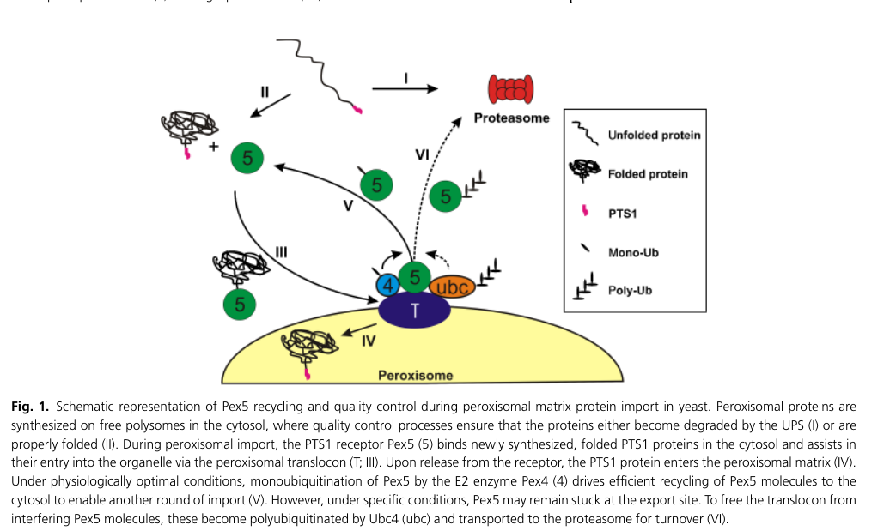

Peroxiredoxin homolog pmp20 (SPCC330.06c) in S. pombe, belonging to the Prx5 subfamily of peroxiredoxins (PANTHER PTHR10430:SF39). Unlike most members of the broader PTHR10430 family (which are active peroxidases), pmp20 has lost peroxidase activity due to absence of the resolving cysteine residue. Kim et al. (PMID:20356456) showed that recombinant pmp20 has no thioredoxin-dependent peroxidase activity and no glutathione peroxidase activity, but does inhibit thermal aggregation of citrate synthase, indicating weak chaperone (holdase) activity. This contrasts sharply with orthologs in the main SF16 subfamily such as C. boidinii CbPmp20 (PMID:11278957, active glutathione peroxidase essential for peroxisomal ROS detoxification) and H. polymorpha Pmp20 (PMID:18694816, whose deletion causes peroxisomal rupture and necrotic cell death). S. pombe pmp20 thus represents a case of neo-functionalization within the peroxiredoxin family, shifting from peroxidase to chaperone function. This is consistent with the broader observation that hyperoxidized peroxiredoxins can switch to chaperone/holdase activity; pmp20 appears to have constitutively adopted this alternative function. Bioinformatics analysis confirmed pmp20 has only one cysteine (C43) with no resolving-cysteine equivalent (file:SCHPO/pmp20/pmp20-bioinformatics/RESULTS.md). Forms homodimers that are disulfide-linked upon oxidation. Localized to cytosol and nucleus (PMID:16823372); peroxisomal and mitochondrial localization inferred from orthologs (IBA). The PTHR10430 family deep research (file:interpro/panther/PTHR10430/PTHR10430-deep-research-falcon.md) cautions that GO annotations should not be naively propagated across peroxiredoxin subfamilies without active-site profiling, as mechanistic diversity within the family is extensive.
| GO Term | Evidence | Action | Reason |
|---|---|---|---|
|
GO:0005737
cytoplasm
|
IBA
GO_REF:0000033 |
ACCEPT |
Summary: IBA annotation for cytoplasmic localization. UniProt confirms cytoplasmic localization.
Reason: Cytoplasmic localization is confirmed by high-throughput localization data (PMID:16823372) and consistent with the UniProt annotation.
|
|
GO:0005777
peroxisome
|
IBA
GO_REF:0000033 |
ACCEPT |
Summary: IBA annotation for peroxisomal localization by phylogenetic inference. The protein name "peroxisomal membrane associated protein 20" suggests this localization.
Reason: The protein is named "peroxisomal membrane associated protein 20" and peroxisomal localization is inferred from phylogenetic analysis of orthologs including human PRDX5 (UniProtKB:P30044) which has demonstrated peroxisomal localization. Falcon deep research also treats S. pombe Pmp20p as peroxisomal based on multiple yeast reviews, while noting the precise topology (matrix vs membrane-facing) is unresolved in the accessible corpus.
Supporting Evidence:
file:SCHPO/pmp20/pmp20-deep-research-falcon.md
In the accessible literature, *S. pombe* Pmp20p is treated as **peroxisomal** in multiple yeast-focused reviews and models
|
|
GO:0042744
hydrogen peroxide catabolic process
|
IBA
GO_REF:0000033 |
MARK AS OVER ANNOTATED |
Summary: IBA annotation for H2O2 catabolism by phylogenetic inference from orthologs.
Reason: While many Prx5 subfamily members are active peroxidases, pmp20 specifically lacks the resolving cysteine and has no thioredoxin-dependent peroxidase activity (PMID:20356456). UniProt states it "may act as a chaperone rather than a peroxidase." The IBA inference from functional orthologs does not apply well here since pmp20 has diverged from the canonical peroxidase function.
Supporting Evidence:
PMID:20356456
The fission yeast PMP20 without thioredoxin-dependent peroxidase activity may act as a molecular chaperone.
file:SCHPO/pmp20/pmp20-bioinformatics/RESULTS.md
pmp20 has one cysteine (C43) and no candidate resolving cysteine in sequence and control-alignment analyses.
file:SCHPO/pmp20/pmp20-deep-research-falcon.md
Direct substrate specificity for *S. pombe* Pmp20 was not found in accessible primary data
|
|
GO:0034599
cellular response to oxidative stress
|
IBA
GO_REF:0000033 |
KEEP AS NON CORE |
Summary: IBA annotation for oxidative stress response by phylogenetic inference.
Reason: Although pmp20 lacks peroxidase activity, its weak chaperone activity may still contribute to oxidative stress responses. The IBA annotation from orthologs is plausible but not a core function for this protein given its divergent activity. Falcon deep research likewise proposes a dual antioxidant-defense plus chaperone-like role, consistent with retaining this as a non-core process annotation.
Supporting Evidence:
file:SCHPO/pmp20/pmp20-deep-research-falcon.md
Pmp20p may have a **dual function**: antioxidant defense plus **molecular chaperone-like activity**
|
|
GO:0045454
cell redox homeostasis
|
IBA
GO_REF:0000033 |
MARK AS OVER ANNOTATED |
Summary: IBA annotation for cell redox homeostasis by phylogenetic inference.
Reason: Pmp20 lacks the resolving cysteine and has no thioredoxin-dependent peroxidase activity. Its role in redox homeostasis is questionable. UniProt explicitly states "Has no thioredoxin-dependent peroxidase activity" (PMID:20356456). The IBA inference from active peroxiredoxin orthologs is misleading for this particular protein.
Supporting Evidence:
PMID:20356456
The fission yeast PMP20 without thioredoxin-dependent peroxidase activity may act as a molecular chaperone.
file:SCHPO/pmp20/pmp20-bioinformatics/RESULTS.md
Active-control resolving cysteine positions do not map to cysteine in pmp20.
|
|
GO:0005739
mitochondrion
|
IBA
GO_REF:0000033 |
KEEP AS NON CORE |
Summary: IBA annotation for mitochondrial localization by phylogenetic inference.
Reason: Mitochondrial localization is inferred from orthologs. Not directly confirmed for pmp20. Could be a secondary localization site.
|
|
GO:0098869
cellular oxidant detoxification
|
IEA
GO_REF:0000120 |
MARK AS OVER ANNOTATED |
Summary: IEA annotation for oxidant detoxification from combined automated methods.
Reason: Pmp20 lacks peroxidase activity and thus likely does not contribute to oxidant detoxification. This IEA annotation is based on domain signatures that do not account for the loss of the resolving cysteine in pmp20.
|
|
GO:0004601
peroxidase activity
|
IEA
GO_REF:0000043 |
REMOVE |
Summary: IEA annotation for peroxidase activity from UniProt keyword mapping.
Reason: Pmp20 has been experimentally shown to lack peroxidase activity. UniProt states "Has no thioredoxin-dependent peroxidase activity" (PMID:20356456). There is also a NOT annotation for glutathione peroxidase activity. The IEA annotation from keyword mapping is incorrect for this protein.
Supporting Evidence:
PMID:20356456
The fission yeast PMP20 without thioredoxin-dependent peroxidase activity may act as a molecular chaperone.
file:SCHPO/pmp20/pmp20-bioinformatics/RESULTS.md
pmp20 has one cysteine and lacks resolving-cysteine equivalence to active thioredoxin-dependent peroxidase controls.
|
|
GO:0005634
nucleus
|
IEA
GO_REF:0000044 |
ACCEPT |
Summary: IEA annotation for nuclear localization from UniProt subcellular location mapping.
Reason: Nuclear localization is confirmed by high-throughput data (PMID:16823372) and consistent with the HDA annotation below.
|
|
GO:0005737
cytoplasm
|
IEA
GO_REF:0000044 |
ACCEPT |
Summary: IEA annotation duplicating IBA for cytoplasmic localization.
Reason: Consistent with the IBA annotation and HDA data from PMID:16823372.
|
|
GO:0008379
thioredoxin peroxidase activity
|
IEA
GO_REF:0000002 |
REMOVE |
Summary: IEA annotation for thioredoxin peroxidase activity from InterPro domain mapping.
Reason: Pmp20 has been experimentally shown to lack thioredoxin-dependent peroxidase activity. UniProt states "Has no thioredoxin-dependent peroxidase activity" and "Pmp20 lacks the resolving cysteine residue" (PMID:20356456). The InterPro domain mapping does not account for the absence of the resolving cysteine.
Supporting Evidence:
PMID:20356456
The fission yeast PMP20 without thioredoxin-dependent peroxidase activity may act as a molecular chaperone.
file:SCHPO/pmp20/pmp20-bioinformatics/RESULTS.md
Comparative sequence and structure analysis supports no resolving cysteine in pmp20.
|
|
GO:0016209
antioxidant activity
|
IEA
GO_REF:0000043 |
MARK AS OVER ANNOTATED |
Summary: IEA annotation for antioxidant activity from UniProt keyword mapping.
Reason: Given the lack of peroxidase activity, antioxidant activity is questionable for pmp20. The protein may have weak antioxidant function through its chaperone activity, but this is not the typical antioxidant mechanism implied by this term.
|
|
GO:0016491
oxidoreductase activity
|
IEA
GO_REF:0000120 |
REMOVE |
Summary: IEA annotation for oxidoreductase activity from combined automated methods.
Reason: Pmp20 has no demonstrated oxidoreductase activity. It lacks the resolving cysteine required for the canonical peroxiredoxin catalytic cycle and has been shown to have no thioredoxin-dependent peroxidase activity (PMID:20356456).
|
|
GO:0034599
cellular response to oxidative stress
|
IEA
GO_REF:0000002 |
KEEP AS NON CORE |
Summary: IEA annotation for oxidative stress response from InterPro mapping.
Reason: Consistent with the IBA annotation. Pmp20 may have some role in oxidative stress response through its weak chaperone activity, but this is not a core function given the absence of peroxidase activity.
|
|
GO:0004602
glutathione peroxidase activity
|
IDA
NOT
PMID:20356456 Distinct functional roles of peroxiredoxin isozymes and glut... |
ACCEPT |
Summary: NOT annotation for glutathione peroxidase activity based on direct assay. Pmp20 does not have glutathione peroxidase activity.
Reason: This negated annotation correctly captures the experimental finding that pmp20 lacks glutathione peroxidase activity (PMID:20356456). Important for documenting what this protein does NOT do.
Supporting Evidence:
PMID:20356456
However, peroxidase activity was not observed for PMP20 (peroxisomal membrane protein 20).
|
|
GO:0051082
unfolded protein binding
|
IDA
PMID:20356456 Distinct functional roles of peroxiredoxin isozymes and glut... |
MODIFY |
Summary: IDA annotation for unfolded protein binding. GO:0051082 is proposed for obsoletion. Based on direct assay showing weak chaperone activity (thermal aggregation prevention). UniProt also has an IC annotation for GO:0042026 (protein refolding) from PomBase, but the actual experimental assay measured prevention of aggregation (holdase-type), not active refolding.
Reason: GO:0051082 is being obsoleted. PMID:20356456 demonstrated that pmp20 inhibits thermal aggregation of citrate synthase (a holdase/chaperone assay), with weaker activity than S. pombe TPx (tpx1). The appropriate replacement is GO:0044183 "protein folding chaperone." This is consistent with the broader observation from family-level analysis (file:interpro/panther/PTHR10430/PTHR10430-deep-research-falcon.md) that hyperoxidized peroxiredoxins can switch to chaperone/holdase activity; pmp20 appears to have constitutively adopted this alternative function due to loss of the resolving cysteine. Note that the UniProt record also carries GO:0042026 (protein refolding) via IC from PomBase, but the experimental evidence specifically supports prevention of aggregation rather than active refolding.
Proposed replacements:
protein folding chaperone
Supporting Evidence:
PMID:20356456
TPx, PMP20, and GPx inhibited thermal aggregation of citrate synthase at 43(o)C, but BCP failed to inhibit the aggregation. The chaperone activities of PMP20 and GPx were weaker than that of TPx.
file:SCHPO/pmp20/pmp20-deep-research-openai.md
S. pombe Pmp20 is in PANTHER subfamily SF39, separate from the main SF16 (PRDX5/AHP1) subfamily. Ortholog studies in C. boidinii and H. polymorpha demonstrate active peroxidase function, but S. pombe pmp20 has diverged to chaperone function.
file:SCHPO/pmp20/pmp20-deep-research-falcon.md
the most direct *S. pombe* experimental claim is **in vitro inhibition of citrate synthase thermal aggregation at 43°C**, supporting a chaperone-like role in protein quality control
|
|
GO:0005634
nucleus
|
HDA
PMID:16823372 ORFeome cloning and global analysis of protein localization ... |
ACCEPT |
Summary: HDA annotation for nuclear localization from high-throughput localization study.
Reason: Nuclear localization determined by systematic ORFeome-based protein localization study in S. pombe (PMID:16823372). Consistent with UniProt annotation.
Supporting Evidence:
PMID:16823372
we determined the localization of 4,431 proteins, corresponding to approximately 90% of the fission yeast proteome, by tagging each ORF with the yellow fluorescent protein.
|
|
GO:0005829
cytosol
|
HDA
PMID:16823372 ORFeome cloning and global analysis of protein localization ... |
ACCEPT |
Summary: HDA annotation for cytosolic localization from high-throughput study.
Reason: Cytosolic localization determined by systematic protein localization study (PMID:16823372). Consistent with the cytoplasm IBA annotation.
Supporting Evidence:
PMID:16823372
we determined the localization of 4,431 proteins, corresponding to approximately 90% of the fission yeast proteome, by tagging each ORF with the yellow fluorescent protein.
|
Exported on March 22, 2026 at 12:44 AM
Organism: Schizosaccharomyces pombe
Sequence:
MVAVGSTLPKVTLWENKPEEVVEFPSQGKFIIVGVPGAFTPPCSSQVPGYIANEKQFAAKGISGIYVVAVNDVFVTKAWKKSFDGGEQSGVHFVADWNGEFTKAFDAGFDASGLLGPLRSKRYAAVVENGKVVKVFIENEVTDVDISSADKVLSSL
I begin with the InterPro architecture. The polypeptide is entirely encompassed by IPR036249 (Thioredoxin-like superfamily, residues 1–155), which frames the overall fold as a canonical thioredoxin scaffold. Nested within this scaffold are IPR013766 (Thioredoxin domain, residues 2–156) and IPR013740 (Redoxin domain, residues 4–153), indicating a classical βαββαβ core that positions a catalytic cysteine for reversible thiol chemistry. Critically, the sequence is assigned to IPR037944 (Peroxiredoxin-5-like family, residues 2–155), which specifies the functional subclass of peroxiredoxins that use a thioredoxin fold to catalyze peroxide reduction. The ordered combination—an all-thioredoxin-like framework with a Peroxiredoxin-5-like family signature—causally dictates peroxidatic chemistry on peroxides rather than generic disulfide exchange.
This domain architecture drives the molecular function. The thioredoxin-like core (IPR036249; IPR013766; IPR013740) stabilizes a reactive cysteine that cycles between thiolate and sulfenic states, while the Peroxiredoxin-5-like identity (IPR037944) confines substrate preference to hydrogen peroxide and organic hydroperoxides. Together, these features produce peroxidase activity that reduces peroxides to water or corresponding alcohols. This directly supports GO:0004601 peroxidase activity as the molecular function.
From function to process, peroxide-reducing chemistry is a primary node in oxidative stress management. By consuming H2O2 and lipid hydroperoxides, the enzyme dampens reactive oxygen species and preserves redox balance. This causal role situates the protein in GO:0006979 response to oxidative stress and GO:0006979 is the most parsimonious biological-process framing for its peroxide-scavenging role.
The absence of transmembrane segments and the soluble thioredoxin fold point to a cytosolic enzyme. Peroxiredoxin-5-like proteins typically operate in the soluble compartment where peroxide flux is buffered and signaling pathways are tuned. This supports a cytoplasmic localization consistent with GO:0005737 cytoplasm and aligns with the stated subcellular location.
Mechanistically, the enzyme likely follows a peroxiredoxin cycle: a peroxidatic cysteine forms a sulfenic acid upon peroxide attack, which is then resolved via intramolecular disulfide formation and reduction by cytosolic thioredoxin. The thioredoxin/thioredoxin reductase system recharges the enzyme, sustaining high catalytic turnover. This cycle predicts transient complexes with thioredoxin and thioredoxin reductase, and proximity to pathways generating or sensing peroxides. I therefore hypothesize interactions with cytosolic thioredoxin and thioredoxin reductase, and potential regulatory contacts with redox-sensitive signaling proteins that assemble in the cytoplasm during oxidative stress responses.
A soluble cytoplasmic peroxidase that uses a thioredoxin-like fold to reduce hydrogen peroxide and organic hydroperoxides, thereby protecting fission yeast cells from oxidative damage. Its catalytic cysteine cycles through thiol/sulfenic/disulfide states and is regenerated by the thioredoxin/thioredoxin reductase system. By detoxifying peroxides in the cytoplasm, it stabilizes cellular redox balance and modulates oxidative-stress pathways.
May be a peroxidase involved in the cellular protection against oxidative stress.
IPR036249, homologous_superfamily) — residues 1-155IPR013766, domain) — residues 2-156IPR037944, family) — residues 2-155IPR013740, domain) — residues 4-153Molecular Function: molecular_function (GO:0003674), binding (GO:0005488), protein binding (GO:0005515), unfolded protein binding (GO:0051082)
Biological Process: biological_process (GO:0008150), cellular process (GO:0009987), protein folding (GO:0006457), protein refolding (GO:0042026)
Cellular Component: cellular_component (GO:0005575), cellular anatomical entity (GO:0110165), cytosol (GO:0005829), intracellular anatomical structure (GO:0005622), organelle (GO:0043226), cytoplasm (GO:0005737), intracellular organelle (GO:0043229), membrane-bounded organelle (GO:0043227), intracellular membrane-bounded organelle (GO:0043231), nucleus (GO:0005634)
Generated by BioReason
Exported on March 22, 2026 at 12:44 AM
Organism: Schizosaccharomyces pombe
Sequence:
MVAVGSTLPKVTLWENKPEEVVEFPSQGKFIIVGVPGAFTPPCSSQVPGYIANEKQFAAKGISGIYVVAVNDVFVTKAWKKSFDGGEQSGVHFVADWNGEFTKAFDAGFDASGLLGPLRSKRYAAVVENGKVVKVFIENEVTDVDISSADKVLSSL
I begin with the InterPro architecture. The polypeptide is entirely encompassed by IPR036249 (Thioredoxin-like superfamily, residues 1–155), which frames the overall fold as a canonical thioredoxin scaffold. Nested within this scaffold are IPR013766 (Thioredoxin domain, residues 2–156) and IPR013740 (Redoxin domain, residues 4–153), indicating a classical βαββαβ core that positions a catalytic cysteine for reversible thiol chemistry. Critically, the sequence is assigned to IPR037944 (Peroxiredoxin-5-like family, residues 2–155), which specifies the functional subclass of peroxiredoxins that use a thioredoxin fold to catalyze peroxide reduction. The ordered combination—an all-thioredoxin-like framework with a Peroxiredoxin-5-like family signature—causally dictates peroxidatic chemistry on peroxides rather than generic disulfide exchange.
This domain architecture drives the molecular function. The thioredoxin-like core (IPR036249; IPR013766; IPR013740) stabilizes a reactive cysteine that cycles between thiolate and sulfenic states, while the Peroxiredoxin-5-like identity (IPR037944) confines substrate preference to hydrogen peroxide and organic hydroperoxides. Together, these features produce peroxidase activity that reduces peroxides to water or corresponding alcohols. This directly supports GO:0004601 peroxidase activity as the molecular function.
From function to process, peroxide-reducing chemistry is a primary node in oxidative stress management. By consuming H2O2 and lipid hydroperoxides, the enzyme dampens reactive oxygen species and preserves redox balance. This causal role situates the protein in GO:0006979 response to oxidative stress and GO:0006979 is the most parsimonious biological-process framing for its peroxide-scavenging role.
The absence of transmembrane segments and the soluble thioredoxin fold point to a cytosolic enzyme. Peroxiredoxin-5-like proteins typically operate in the soluble compartment where peroxide flux is buffered and signaling pathways are tuned. This supports a cytoplasmic localization consistent with GO:0005737 cytoplasm and aligns with the stated subcellular location.
Mechanistically, the enzyme likely follows a peroxiredoxin cycle: a peroxidatic cysteine forms a sulfenic acid upon peroxide attack, which is then resolved via intramolecular disulfide formation and reduction by cytosolic thioredoxin. The thioredoxin/thioredoxin reductase system recharges the enzyme, sustaining high catalytic turnover. This cycle predicts transient complexes with thioredoxin and thioredoxin reductase, and proximity to pathways generating or sensing peroxides. I therefore hypothesize interactions with cytosolic thioredoxin and thioredoxin reductase, and potential regulatory contacts with redox-sensitive signaling proteins that assemble in the cytoplasm during oxidative stress responses.
A soluble cytoplasmic peroxidase that uses a thioredoxin-like fold to reduce hydrogen peroxide and organic hydroperoxides, thereby protecting fission yeast cells from oxidative damage. Its catalytic cysteine cycles through thiol/sulfenic/disulfide states and is regenerated by the thioredoxin/thioredoxin reductase system. By detoxifying peroxides in the cytoplasm, it stabilizes cellular redox balance and modulates oxidative-stress pathways.
May be a peroxidase involved in the cellular protection against oxidative stress.
IPR036249, homologous_superfamily) — residues 1-155IPR013766, domain) — residues 2-156IPR037944, family) — residues 2-155IPR013740, domain) — residues 4-153Molecular Function: molecular_function (GO:0003674), binding (GO:0005488), protein binding (GO:0005515), unfolded protein binding (GO:0051082)
Biological Process: biological_process (GO:0008150), cellular process (GO:0009987), protein folding (GO:0006457), protein refolding (GO:0042026)
Cellular Component: cellular_component (GO:0005575), cellular anatomical entity (GO:0110165), cytosol (GO:0005829), intracellular anatomical structure (GO:0005622), organelle (GO:0043226), cytoplasm (GO:0005737), intracellular organelle (GO:0043229), membrane-bounded organelle (GO:0043227), intracellular membrane-bounded organelle (GO:0043231), nucleus (GO:0005634)
Generated by BioReason
The research report should be a detailed narrative explaining the function, biological processes, and localization of the gene product. Citations should be given for all claims.
You should prioritize authoritative reviews and primary scientific literature when conducting research. You can supplement
this with annotations you find in gene/protein databases, but these can be outdated or inaccurate.
We are specifically interested in the primary function of the gene - for enzymes, what reaction is catalyzed, and what is the substrate specificity? For transporters, what is the substrate? For structural proteins or adapters, what is the broader structural role? For signaling molecules, what is the role in the pathway.
We are interested in where in or outside the cell the gene product carries out its function.
We are also interested in the signaling or biochemical pathways in which the gene functions. We are less interested in broad pleiotropic effects, except where these elucidate the precise role.
Include evidence where possible. We are interested in both experimental evidence as well as inference from structure, evolution, or bioinformatic analysis. Precise studies should be prioritized over high-throughput, where available.
The S. pombe gene pmp20 (UniProt O14313; ORF SPCC330.06c) encodes a Prx5-subfamily peroxiredoxin (peroxiredoxin family; redoxin/thioredoxin-fold protein) that is discussed in the yeast literature as a peroxisomal reactive oxygen species (ROS) detoxification factor and as a protein with additional chaperone-like (“holdase”) activity under heat stress. In the accessible literature corpus, the most direct S. pombe experimental claim is in vitro inhibition of citrate synthase thermal aggregation at 43°C, supporting a chaperone-like role in protein quality control. Broader biochemical mechanism (thiol-dependent peroxide reduction; likely preference for organic peroxides in some fungal homologs) and peroxisomal targeting logic are best supported by orthology/structural homology to fungal PMP20/Ahp1 proteins and by yeast peroxisome quality-control reviews. (manivannan2012theimpactof pages 2-3, beach2012integrationofperoxisomes pages 5-7, lee1999anewantioxidant pages 2-4)
Target confirmed: the relevant “Pmp20” here is a fungal peroxiredoxin-family protein, not an unrelated peroxisomal membrane biogenesis protein.
Peroxiredoxins are thiol-dependent, selenium- and heme-free peroxidases that reduce peroxides using cysteine chemistry, typically coupled to cellular thiol electron-donor systems (thioredoxin, glutaredoxin, etc.). (lee1999anewantioxidant pages 1-2, chao2009characterizationofa pages 1-2)
Although the accessible S. pombe-specific texts do not provide catalytic constants for Pmp20, the family-level model is well established: a peroxidatic cysteine reacts with peroxide, then the enzyme is re-reduced by cellular thiols (often thioredoxin systems). (lee1999anewantioxidant pages 1-2, lee1999anewantioxidant pages 2-4)
Peroxisomes are organelles that harbor H2O2-producing oxidases and therefore require antioxidant capacity to prevent oxidative damage to proteins and membrane lipids. Reviews emphasize that peroxisomes produce significant ROS and integrate into aging/death pathways in yeast. (manivannan2012theimpactof pages 1-2, aksam2009preservingorganellevitality pages 1-2)
The best-supported primary role for S. pombe Pmp20 is as a peroxisomal peroxiredoxin-like peroxide detoxification enzyme contributing to ROS homeostasis in the peroxisome. This is supported by multiple yeast peroxisome/aging reviews that group Pmp20p with peroxisomal ROS-scavenging enzymes and describe it as degrading hydrogen peroxide in peroxisomal antioxidant systems. (manivannan2012theimpactof pages 2-3, beach2012integrationofperoxisomes pages 5-7)
Direct substrate specificity for S. pombe Pmp20 was not found in accessible primary data. However:
Together, these data suggest that fungal “Pmp20/Ahp” family proteins can detoxify organic and/or inorganic peroxides, with the exact preference depending on the specific member and organism. For S. pombe Pmp20 (Prx5-like), organic hydroperoxides are a plausible physiological substrate class (inference from family), but this remains to be confirmed by S. pombe-specific enzymology. (lee1999anewantioxidant pages 2-4, aksam2009preservingorganellevitality pages 6-7)
In the accessible literature, S. pombe Pmp20p is treated as peroxisomal in multiple yeast-focused reviews and models. (manivannan2012theimpactof pages 2-3, beach2012integrationofperoxisomes pages 5-7)
Peroxisomal matrix proteins are often imported via a C-terminal peroxisomal targeting signal type 1 (PTS1) recognized by the receptor Pex5, and a yeast peroxisome review includes a schematic of this pathway. (aksam2009preservingorganellevitality pages 2-3, aksam2009preservingorganellevitality media c5398a0b)
For Pmp20 orthologs in methylotrophic yeasts, the same review provides figure-based evidence of a conserved PTS1 motif (-AKL-COOH) in Pmp20 orthologs (alignment) and describes Pmp20 as a PTS1 protein. (aksam2009preservingorganellevitality pages 6-7, aksam2009preservingorganellevitality media c5398a0b)
Because UniProt describes S. pombe Pmp20 as “peroxisomal membrane associated” yet peroxiredoxins are frequently matrix-facing enzymes, the most conservative evidence-based statement from the available corpus is that S. pombe Pmp20p is peroxisome-associated/peroxisomal (compartment), while the precise topology (matrix vs membrane-facing association) is not resolved by the retrieved full texts. (manivannan2012theimpactof pages 2-3, beach2012integrationofperoxisomes pages 5-7, aksam2009preservingorganellevitality pages 6-7)
A yeast peroxisome quality-control review frames Pmp20-family proteins as part of an organelle defense system counteracting ROS-induced damage. (aksam2009preservingorganellevitality pages 1-2, aksam2009preservingorganellevitality pages 6-7)
A broader yeast aging model explicitly names peroxiredoxin (Pmp20p in yeast) alongside catalase as a peroxisome-imported ROS scavenger helping minimize oxidative damage to peroxisomal proteins and membrane lipids. (Beach et al., 2012; 2012-07-31; https://doi.org/10.3389/fphys.2012.00283) (beach2012integrationofperoxisomes pages 5-7)
In methylotrophic yeasts, absence of Pmp20 is reported to cause peroxisomal protein leakage and necrotic cell death, indicating that peroxisome redox failure can collapse organelle integrity and trigger regulated necrosis-like outcomes. (manivannan2012theimpactof pages 5-5, aksam2009preservingorganellevitality pages 6-7)
This specific phenotype is not shown for S. pombe in the accessible full texts; therefore it should be treated as contextual mechanistic evidence from related yeasts, not as a demonstrated S. pombe phenotype. (manivannan2012theimpactof pages 5-5, aksam2009preservingorganellevitality pages 6-7)
A yeast peroxisome/aging review reports that in S. pombe, Pmp20p inhibited thermal aggregation of citrate synthase in vitro at 43°C, consistent with a “holdase” chaperone-like function. (manivannan2012theimpactof pages 2-3)
In S. cerevisiae, a related antioxidant peroxiredoxin-family member Ahp1p was identified via rescue of tert-butyl hydroperoxide (t-BOOH) hypersensitivity, including selection conditions described as 0.5 mM t-BOOH, and genetic data supported organic-peroxide defense. (Lee et al., 1999; 1999-02-19; https://doi.org/10.1074/jbc.274.8.4537) (lee1999anewantioxidant pages 1-2)
In methylotrophic yeasts, deletion of Pmp20 orthologs is linked to increased ROS, lipid peroxidation, peroxisomal protein leakage, and necrotic cell death under methanol growth (peroxisome-intensive oxidative metabolism). (Aksam et al., 2009; 2009-09; https://doi.org/10.1111/j.1567-1364.2009.00534.x) (aksam2009preservingorganellevitality pages 6-7)
Although S. pombe pmp20 itself is not a direct industrial target in the accessible 2023–2024 literature, the concept of peroxisomal redox management by Pmp20-family peroxiredoxins is relevant to:
Authoritative reviews converge on the idea that peroxisomal antioxidant enzymes (including peroxiredoxins such as Pmp20) are central to maintaining peroxisome integrity in ROS-generating metabolism and that peroxisome dysfunction can contribute to aging and cell death. (manivannan2012theimpactof pages 1-2, aksam2009preservingorganellevitality pages 1-2, beach2012integrationofperoxisomes pages 5-7)
For S. pombe specifically, expert synthesis further suggests Pmp20p may have a dual function: antioxidant defense plus molecular chaperone-like activity, potentially linking redox stress with protein quality control inside peroxisomes. (manivannan2012theimpactof pages 2-3)
| Evidence scope | Gene/protein identity / aliases | Organism | Localization evidence | Enzymatic function / substrate evidence | Physiological role / phenotype | Key reference(s) with year and URL/DOI |
|---|---|---|---|---|---|---|
| Verified target identity | Pmp20 / Pmp20p; UniProt O14313; peroxisomal membrane associated protein 20; peroxiredoxin homolog; member of the peroxiredoxin family / Prx5-like subgroup. A comparative sequence analysis of fungal PMP20 proteins explicitly includes an S. pombe PMP20 homologue among AhpC/TSA-related proteins, supporting that the SCHPO target belongs to the same redoxin/peroxiredoxin family as yeast alkyl-hydroperoxide reductases (lee1999anewantioxidant pages 2-4, lee1999anewantioxidant pages 6-7). | Schizosaccharomyces pombe | In aging/quality-control reviews, Pmp20p is treated as a peroxisomal antioxidant enzyme in S. pombe, grouped with catalase and glutathione peroxidase in peroxisomes (manivannan2012theimpactof pages 2-3, beach2012integrationofperoxisomes pages 5-7). | Family-level inference from AhpC/TSA/peroxiredoxin homology indicates thiol-dependent peroxide reduction chemistry (lee1999anewantioxidant pages 1-2, lee1999anewantioxidant pages 2-4, lee1999anewantioxidant pages 6-7). | Supports interpretation of SCHPO Pmp20 as a peroxisomal redox-protective enzyme rather than an unrelated PMP20 from another species (manivannan2012theimpactof pages 2-3). | Lee et al., 1999, J Biol Chem, https://doi.org/10.1074/jbc.274.8.4537; Manivannan et al., 2012, Front Oncol, https://doi.org/10.3389/fonc.2012.00050 |
| S. pombe-specific functional evidence | Pmp20p in fission yeast is discussed together with thioredoxin peroxidase and glutathione peroxidase as a peroxisomal oxidative-stress defense protein (manivannan2012theimpactof pages 2-3). | S. pombe | Review evidence places Pmp20p in the peroxisome of fission yeast (manivannan2012theimpactof pages 2-3, beach2012integrationofperoxisomes pages 5-7). | In vitro data summarized in review literature indicate that Pmp20p inhibited thermal aggregation of citrate synthase at 43°C, alongside other peroxide-detoxifying enzymes; this supports a secondary chaperone-like activity in addition to antioxidant/peroxidase function (manivannan2012theimpactof pages 2-3). | Proposed role in organelle quality control and stress protection within peroxisomes; evidence is direct for chaperone-like anti-aggregation activity but limited for a detailed substrate profile in S. pombe itself (manivannan2012theimpactof pages 2-3). | Han et al., 2015, Mycobiology, https://doi.org/10.5941/MYCO.2015.43.3.272; Manivannan et al., 2012, https://doi.org/10.3389/fonc.2012.00050 |
| S. pombe-specific pathway/role inference | Pmp20p is part of the peroxisomal ROS-scavenging module imported by Pex5-dependent pathways in yeast aging models (beach2012integrationofperoxisomes pages 5-7). | S. pombe | Peroxisomal compartment assignment is integrated into models where efficient import of catalase and Pmp20p minimizes oxidative damage to peroxisomal proteins and membrane lipids (beach2012integrationofperoxisomes pages 5-7). | Substrate not specified directly for S. pombe in the accessible excerpts, but the enzyme is treated as a ROS scavenger / peroxiredoxin acting on peroxides inside peroxisomes (manivannan2012theimpactof pages 2-3, beach2012integrationofperoxisomes pages 5-7). | Supports a role in maintenance of peroxisomal integrity, limiting oxidative injury and fitting into broader peroxisome quality-control and aging pathways (beach2012integrationofperoxisomes pages 5-7, manivannan2012theimpactof pages 5-6). | Beach et al., 2012, Front Physiol, https://doi.org/10.3389/fphys.2012.00283; Manivannan et al., 2012, https://doi.org/10.3389/fonc.2012.00050 |
| Closely related yeast evidence for catalytic inference | Ahp1p is a yeast AhpC/TSA-family antioxidant closely related to fungal PMP20 proteins; sequence comparison places S. pombe PMP20 among these homologs (lee1999anewantioxidant pages 2-4, lee1999anewantioxidant pages 6-7). | Saccharomyces cerevisiae (inference to SCHPO family member) | Ahp1p contains a peroxisomal-like sorting signal, though some related proteins can vary in distribution; the broader family includes fungal peroxisomal proteins (lee1999anewantioxidant pages 1-2, lee1999anewantioxidant pages 6-7). | Direct experiments show Ahp1p is specific for organic peroxides (e.g., tert-butyl hydroperoxide) rather than H2O2, and requires the thioredoxin/thioredoxin reductase system, not glutathione, for antioxidant function (lee1999anewantioxidant pages 1-2, lee1999anewantioxidant pages 2-4). | Deletion causes t-BOOH hypersensitivity; overexpression increases resistance to organic peroxide stress, establishing the family as alkyl-hydroperoxide defense proteins (lee1999anewantioxidant pages 2-4). | Lee et al., 1999, J Biol Chem, https://doi.org/10.1074/jbc.274.8.4537 |
| Closely related yeast evidence for peroxisomal targeting | Fungal Pmp20 orthologs are described as PTS1 proteins with conserved C-terminal peroxisomal targeting signals; image/text evidence highlights the conserved -AKL-COOH motif in Pmp20 orthologs (aksam2009preservingorganellevitality pages 6-7, aksam2009preservingorganellevitality media c5398a0b). | Methylotrophic yeasts (Candida boidinii, Hansenula/ Ogataea polymorpha) | Direct evidence shows Pmp20 orthologs are localized to peroxisomes and imported as Pex5-recognized PTS1 proteins (aksam2009preservingorganellevitality pages 6-7, aksam2009preservingorganellevitality media c5398a0b). | These orthologs are peroxiredoxins with peroxide-detoxifying activity; in C. boidinii, CbPmp20 shows glutathione peroxidase activity and reacts with alkyl hydroperoxides and H2O2 (aksam2009preservingorganellevitality pages 6-7). | Strongly supports the localization/function model for SCHPO Pmp20 as a peroxisomal redoxin enzyme rather than a structural membrane constituent (aksam2009preservingorganellevitality pages 6-7, aksam2009preservingorganellevitality media c5398a0b). | Aksam et al., 2009, FEMS Yeast Res, https://doi.org/10.1111/j.1567-1364.2009.00534.x |
| Closely related yeast evidence for peroxisomal integrity phenotype | Loss of Pmp20/peroxiredoxin in methylotrophic yeasts causes severe oxidative defects and protein leakage from peroxisomes (manivannan2012theimpactof pages 5-5, aksam2009preservingorganellevitality pages 6-7). | Hansenula/ Ogataea polymorpha | Because the protein is peroxisomal, its deletion specifically compromises peroxisomal integrity under ROS-generating growth conditions (manivannan2012theimpactof pages 5-5, aksam2009preservingorganellevitality pages 6-7). | Associated with increased ROS and lipid peroxidation when peroxisomal oxidative metabolism is active (aksam2009preservingorganellevitality pages 6-7). | Deletion causes severe growth defects on methanol, peroxisomal protein leakage, and necrotic cell death, showing that Pmp20-family peroxiredoxins can be essential for preserving organelle compartmentalization and viability (manivannan2012theimpactof pages 5-5, aksam2009preservingorganellevitality pages 6-7). | Aksam et al., 2009, FEMS Yeast Res, https://doi.org/10.1111/j.1567-1364.2009.00534.x; summarized in Manivannan et al., 2012, https://doi.org/10.3389/fonc.2012.00050 |
| Closely related yeast evidence for broader biological interpretation | Reviews of peroxisome biology and yeast PCD cite absence of Pmp20 causing peroxisomal protein leakage and necrotic cell death, placing Pmp20 among key peroxisomal antioxidant/quality-control factors (manivannan2012theimpactof pages 5-6, manivannan2012theimpactof pages 5-5, aksam2009preservingorganellevitality pages 6-7). | Yeasts, especially methylotrophs; applied as functional context for SCHPO | Peroxisomal antioxidant localization is central to interpretation (manivannan2012theimpactof pages 5-6, aksam2009preservingorganellevitality pages 6-7). | Reinforces peroxide-detoxification role of Pmp20-family proteins in organelles with high ROS burden (aksam2009preservingorganellevitality pages 6-7). | Supports expert interpretation that SCHPO Pmp20 most likely protects the peroxisomal lumen/membrane from oxidative damage and may secondarily contribute to protein quality control (manivannan2012theimpactof pages 2-3, manivannan2012theimpactof pages 5-6, aksam2009preservingorganellevitality pages 6-7). | Farrugia & Balzan, 2012, Front Oncol, https://doi.org/10.3389/fonc.2012.00064; Manivannan et al., 2012, https://doi.org/10.3389/fonc.2012.00050; Aksam et al., 2009, https://doi.org/10.1111/j.1567-1364.2009.00534.x |
Table: This table summarizes direct and inferred evidence for the identity, localization, biochemical function, and biological roles of Schizosaccharomyces pombe Pmp20 (UniProt O14313). It separates S. pombe-specific findings from orthology-based inferences drawn from closely related yeast Pmp20/Ahp1 proteins.
Cropped figures from Aksam et al. (2009) show (i) a schematic of Pex5/PTS1-mediated peroxisomal matrix protein import and receptor recycling and (ii) a C-terminal alignment highlighting the conserved PTS1 -AKL-COOH motif in Pmp20 orthologs. (Aksam et al., 2009; https://doi.org/10.1111/j.1567-1364.2009.00534.x) (aksam2009preservingorganellevitality media c5398a0b)
References
(manivannan2012theimpactof pages 2-3): Selvambigai Manivannan, Christian Quintus Scheckhuber, Marten Veenhuis, and Ida Johanna van der Klei. The impact of peroxisomes on cellular aging and death. Frontiers in Oncology, Apr 2012. URL: https://doi.org/10.3389/fonc.2012.00050, doi:10.3389/fonc.2012.00050. This article has 53 citations.
(beach2012integrationofperoxisomes pages 5-7): Adam Beach, Michelle T. Burstein, Vincent R. Richard, Anna Leonov, Sean Levy, and Vladimir I. Titorenko. Integration of peroxisomes into an endomembrane system that governs cellular aging. Frontiers in Physiology, Jul 2012. URL: https://doi.org/10.3389/fphys.2012.00283, doi:10.3389/fphys.2012.00283. This article has 63 citations.
(lee1999anewantioxidant pages 2-4): Jaekwon Lee, Daniel Spector, Christian Godon, Jean Labarre, and Michel B. Toledano. A new antioxidant with alkyl hydroperoxide defense properties in yeast*. The Journal of Biological Chemistry, 274:4537-4544, Feb 1999. URL: https://doi.org/10.1074/jbc.274.8.4537, doi:10.1074/jbc.274.8.4537. This article has 230 citations.
(lee1999anewantioxidant pages 1-2): Jaekwon Lee, Daniel Spector, Christian Godon, Jean Labarre, and Michel B. Toledano. A new antioxidant with alkyl hydroperoxide defense properties in yeast*. The Journal of Biological Chemistry, 274:4537-4544, Feb 1999. URL: https://doi.org/10.1074/jbc.274.8.4537, doi:10.1074/jbc.274.8.4537. This article has 230 citations.
(chao2009characterizationofa pages 1-2): Hsiu-fung Chao, Yung-fu Yen, and Maurice SB Ku. Characterization of a salt-induced dhahp, a gene coding for alkyl hydroperoxide reductase, from the extremely halophilic yeast debaryomyces hansenii. BMC Microbiology, 9:182-182, Aug 2009. URL: https://doi.org/10.1186/1471-2180-9-182, doi:10.1186/1471-2180-9-182. This article has 22 citations and is from a peer-reviewed journal.
(manivannan2012theimpactof pages 1-2): Selvambigai Manivannan, Christian Quintus Scheckhuber, Marten Veenhuis, and Ida Johanna van der Klei. The impact of peroxisomes on cellular aging and death. Frontiers in Oncology, Apr 2012. URL: https://doi.org/10.3389/fonc.2012.00050, doi:10.3389/fonc.2012.00050. This article has 53 citations.
(aksam2009preservingorganellevitality pages 1-2): Eda Bener Aksam, Bart de Vries, Ida J. van der Klei, and Jan A.K.W. Kiel. Preserving organelle vitality: peroxisomal quality control mechanisms in yeast. FEMS yeast research, 9 6:808-20, Sep 2009. URL: https://doi.org/10.1111/j.1567-1364.2009.00534.x, doi:10.1111/j.1567-1364.2009.00534.x. This article has 40 citations and is from a peer-reviewed journal.
(aksam2009preservingorganellevitality pages 6-7): Eda Bener Aksam, Bart de Vries, Ida J. van der Klei, and Jan A.K.W. Kiel. Preserving organelle vitality: peroxisomal quality control mechanisms in yeast. FEMS yeast research, 9 6:808-20, Sep 2009. URL: https://doi.org/10.1111/j.1567-1364.2009.00534.x, doi:10.1111/j.1567-1364.2009.00534.x. This article has 40 citations and is from a peer-reviewed journal.
(aksam2009preservingorganellevitality pages 2-3): Eda Bener Aksam, Bart de Vries, Ida J. van der Klei, and Jan A.K.W. Kiel. Preserving organelle vitality: peroxisomal quality control mechanisms in yeast. FEMS yeast research, 9 6:808-20, Sep 2009. URL: https://doi.org/10.1111/j.1567-1364.2009.00534.x, doi:10.1111/j.1567-1364.2009.00534.x. This article has 40 citations and is from a peer-reviewed journal.
(aksam2009preservingorganellevitality media c5398a0b): Eda Bener Aksam, Bart de Vries, Ida J. van der Klei, and Jan A.K.W. Kiel. Preserving organelle vitality: peroxisomal quality control mechanisms in yeast. FEMS yeast research, 9 6:808-20, Sep 2009. URL: https://doi.org/10.1111/j.1567-1364.2009.00534.x, doi:10.1111/j.1567-1364.2009.00534.x. This article has 40 citations and is from a peer-reviewed journal.
(manivannan2012theimpactof pages 5-5): Selvambigai Manivannan, Christian Quintus Scheckhuber, Marten Veenhuis, and Ida Johanna van der Klei. The impact of peroxisomes on cellular aging and death. Frontiers in Oncology, Apr 2012. URL: https://doi.org/10.3389/fonc.2012.00050, doi:10.3389/fonc.2012.00050. This article has 53 citations.
(lee1999anewantioxidant pages 6-7): Jaekwon Lee, Daniel Spector, Christian Godon, Jean Labarre, and Michel B. Toledano. A new antioxidant with alkyl hydroperoxide defense properties in yeast*. The Journal of Biological Chemistry, 274:4537-4544, Feb 1999. URL: https://doi.org/10.1074/jbc.274.8.4537, doi:10.1074/jbc.274.8.4537. This article has 230 citations.
(manivannan2012theimpactof pages 5-6): Selvambigai Manivannan, Christian Quintus Scheckhuber, Marten Veenhuis, and Ida Johanna van der Klei. The impact of peroxisomes on cellular aging and death. Frontiers in Oncology, Apr 2012. URL: https://doi.org/10.3389/fonc.2012.00050, doi:10.3389/fonc.2012.00050. This article has 53 citations.
(farrugia2012oxidativestressand pages 7-8): Gianluca Farrugia and Rena Balzan. Oxidative stress and programmed cell death in yeast. Frontiers in Oncology, Jun 2012. URL: https://doi.org/10.3389/fonc.2012.00064, doi:10.3389/fonc.2012.00064. This article has 407 citations.
(chao2009characterizationofa pages 2-4): Hsiu-fung Chao, Yung-fu Yen, and Maurice SB Ku. Characterization of a salt-induced dhahp, a gene coding for alkyl hydroperoxide reductase, from the extremely halophilic yeast debaryomyces hansenii. BMC Microbiology, 9:182-182, Aug 2009. URL: https://doi.org/10.1186/1471-2180-9-182, doi:10.1186/1471-2180-9-182. This article has 22 citations and is from a peer-reviewed journal.

The pmp20 gene of S. pombe (UniProt O14313) encodes a thioredoxin peroxidase belonging to the peroxiredoxin family (AhpC/TSA family) (www.yeastrc.org). This protein is also referred to as peroxisomal membrane protein 20 (Pmp20), reflecting its localization, or as a peroxiredoxin Pmp20 due to its enzymatic activity (thebiogrid.org) (www.yeastrc.org). It is a 156-amino-acid enzyme of the Prx5 subfamily of peroxiredoxins, characterized by a thioredoxin-like fold and a conserved cysteine residue for peroxide reduction. Notably, “Pmp20” in yeast should not be confused with other “PMP” proteins (e.g. PMP22 in animals is unrelated); here Pmp20 specifically denotes a peroxisomal peroxiredoxin in fission yeast, analogous to PRDX5 in mammals (pubmed.ncbi.nlm.nih.gov) (pubmed.ncbi.nlm.nih.gov).
Peroxiredoxins are a family of antioxidant enzymes that use a cysteine thiol to neutralize peroxides. Pmp20 belongs to the atypical 2-Cys/1-Cys peroxiredoxin class, meaning it has one key peroxidatic cysteine (and possibly a second resolving Cys in some species) used to reduce peroxides (pubmed.ncbi.nlm.nih.gov). Like other peroxiredoxins, Pmp20 is a thioredoxin-dependent peroxidase (often termed a thioredoxin peroxidase), indicating it interfaces with the cellular thioredoxin system. Early sequence analyses classified Pmp20 in the AhpC/TSA family (alkyl hydroperoxide reductase/C. Tsa1 antioxidant family), underlining its similarity to known peroxiredoxins (such as yeast Tsa1/Tsa2 or bacterial AhpC) (www.yeastrc.org). The UniProt annotation and PomBase confirm that Pmp20 is a peroxiredoxin-like protein rather than a structural membrane protein (thebiogrid.org), despite the “membrane protein” nomenclature. This naming arose historically because Pmp20 was found associated with peroxisomal membranes (see below), not because it spans the membrane.
Pmp20 is localized to peroxisomes, the organelles where it carries out its protective role. A C-terminal peroxisomal targeting signal (PTS1) directs Pmp20 to the peroxisomal matrix or membrane vicinity (pubmed.ncbi.nlm.nih.gov) (pubmed.ncbi.nlm.nih.gov). In Candida boidinii (a methylotrophic yeast), the ortholog CbPmp20 was shown to be associated with the inner face of the peroxisomal membrane (pubmed.ncbi.nlm.nih.gov), and sequence analysis identified a conserved PTS1 tripeptide at the C-terminus of Pmp20 homologs in yeast and mammals (pubmed.ncbi.nlm.nih.gov). By inference, S. pombe Pmp20 also contains a PTS1 and resides in the peroxisomal matrix, likely enriched near the membrane. This localization is consistent with its function in detoxifying reactive oxygen species specifically generated in peroxisomes.
Experimental annotations support the peroxisomal localization: Pmp20 has been detected in peroxisome fractions (Inferred from Sequence or structural Similarity – IEA) and was named “peroxisomal membrane protein 20” accordingly (www.yeastrc.org). Interestingly, one high-throughput study in S. pombe reported Pmp20 in the nucleus (IDA evidence in a protein atlas) (www.yeastrc.org), but this may reflect mis-targeting of a fusion protein or secondary localization under stress. There is no strong evidence that Pmp20 normally operates in the nucleus. In contrast, mammalian PRDX5 (the human atypical 2-Cys peroxiredoxin) has a more promiscuous localization – found in cytosol, mitochondria, peroxisomes, and nucleus (pubmed.ncbi.nlm.nih.gov) (pubmed.ncbi.nlm.nih.gov) – due to multiple targeting sequences. S. pombe Pmp20 is primarily a peroxisomal antioxidant enzyme, with its peroxisomal targeting being essential for function (pubmed.ncbi.nlm.nih.gov).
Pmp20 is an antioxidant peroxidase that catalyzes the reduction of peroxides, thereby protecting cells from oxidative damage. It specifically reduces hydrogen peroxide (H₂O₂) and organic hydroperoxides (such as lipid peroxides) to water or corresponding alcohols. The enzyme harbors a cysteine–sulfenic acid (Cys-SOH) formation mechanism typical of peroxiredoxins: the peroxidatic cysteine in Pmp20 reacts with peroxide substrates to form a cysteine-sulfenic acid, which then is resolved either by a second cysteine (forming a disulfide) or directly reduced by electron donors (pmc.ncbi.nlm.nih.gov) (pmc.ncbi.nlm.nih.gov). In vitro assays have demonstrated peroxidase activity of Pmp20 homologs. For example, Horiguchi et al. (2001, J. Biol. Chem.) showed the Candida boidinii Pmp20 exhibits glutathione peroxidase activity, efficiently reducing alkyl hydroperoxide and H₂O₂ when provided with glutathione (pubmed.ncbi.nlm.nih.gov) (pubmed.ncbi.nlm.nih.gov). The catalytic activity strictly requires the single conserved cysteine (Cys-53 in C. boidinii), as mutation of this residue abolishes peroxidase activity (pubmed.ncbi.nlm.nih.gov) (pubmed.ncbi.nlm.nih.gov).
Notably, Pmp20 and its orthologs are particularly effective against organic peroxides. The mammalian PRDX5 enzyme (which is highly similar to yeast Pmp20 in sequence and mechanism) has second-order rate constants on the order of 10^6–10^7 M⁻¹s⁻¹ for reducing alkyl hydroperoxides and peroxynitrite, whereas its reaction with H₂O₂ is an order of magnitude slower (~10^5 M⁻¹s⁻¹) (pubmed.ncbi.nlm.nih.gov) (pubmed.ncbi.nlm.nih.gov). This suggests Pmp20 is specialized to detoxify lipid hydroperoxides and possibly peroxynitrite efficiently, while still contributing to H₂O₂ removal (though catalase in peroxisomes is the primary H₂O₂ scavenger). In line with this, C. boidinii Pmp20 knockout cells did not accumulate H₂O₂ even when catalase was absent, implying Pmp20’s main substrates are likely other reactive oxygen species (such as organelle-associated lipid peroxides) rather than bulk H₂O₂ (pubmed.ncbi.nlm.nih.gov) (pubmed.ncbi.nlm.nih.gov). Researchers speculate that Pmp20’s key role is to decompose ROS at the peroxisomal membrane surface (e.g. lipid peroxides), preventing membrane oxidative damage (pubmed.ncbi.nlm.nih.gov) (pubmed.ncbi.nlm.nih.gov).
To regenerate its active form after peroxide reduction, Pmp20 likely relies on cellular reductants. Thioredoxin is a typical electron donor for most peroxiredoxins, and a cytosolic thioredoxin system could act on peroxisomal Pmp20 if the compartments interact. However, yeast peroxisomes also contain glutathione (GSH) – Horiguchi et al. detected physiological levels of reduced GSH inside C. boidinii peroxisomes (pubmed.ncbi.nlm.nih.gov) (pubmed.ncbi.nlm.nih.gov) – raising the possibility that Pmp20 might be reduced by GSH or a dedicated peroxiredoxin reductase. In any case, Pmp20 functions as a cysteine-based peroxidase, reducing H₂O₂ or R–OOH to water/R–OH, and safeguarding the organelle’s redox balance. Because of this activity, Pmp20 is sometimes termed a peroxiredoxin or antioxidant protein in databases (www.yeastrc.org).
Through its enzymatic activity, Pmp20 plays a crucial protective role in maintaining peroxisomal integrity and overall cell viability under oxidative stress. Peroxisomes carry out metabolic reactions (e.g. fatty acid β-oxidation, uridine catabolism, and in some yeasts, methanol utilization) that generate H₂O₂ and other reactive oxygen species as byproducts (pmc.ncbi.nlm.nih.gov) (pmc.ncbi.nlm.nih.gov). Pmp20 is part of the organelle’s arsenal (along with catalase) to neutralize these ROS. Experimental studies in yeast strongly support this protective role:
Hansenula polymorpha (2008, Free Radic Biol Med) – H. polymorpha is a yeast that grows on methanol via a peroxisomal oxidase (producing H₂O₂). Bener Aksam et al. (2008) disrupted the PMP20 gene in this yeast and observed severe oxidative stress phenotypes (pubmed.ncbi.nlm.nih.gov) (pubmed.ncbi.nlm.nih.gov). The pmp20Δ strain grew normally on substrates not requiring peroxisomal metabolism, but failed to grow on methanol as sole carbon source (pubmed.ncbi.nlm.nih.gov). On methanol, pmp20Δ cells accumulated elevated levels of ROS and lipid peroxidation products, and showed leakage of peroxisomal matrix enzymes into the cytosol (pubmed.ncbi.nlm.nih.gov) (pubmed.ncbi.nlm.nih.gov). The loss of peroxisome membrane integrity in the mutant led to cell death with necrotic markers (loss of membrane integrity, loss of clonogenic survival) (pubmed.ncbi.nlm.nih.gov). The authors concluded that without Pmp20, peroxisomes suffer oxidative damage, rupture, and induce necrotic cell death (pubmed.ncbi.nlm.nih.gov) (pubmed.ncbi.nlm.nih.gov). This underscores that Pmp20 is essential for peroxisomal ROS homeostasis and organelle stability during high oxidative stress conditions.
Candida boidinii (2001, J. Biol. Chem.) – C. boidinii is another methylotrophic yeast. Horiguchi et al. (2001) deleted PMP20 in this organism and similarly found that the mutant could not grow on methanol (pubmed.ncbi.nlm.nih.gov). Expressing wild-type Pmp20 rescued growth, but importantly, a Pmp20 variant missing the PTS1 (peroxisome-targeting sequence) failed to complement the mutant (pubmed.ncbi.nlm.nih.gov). This demonstrated that Pmp20’s function must be within peroxisomes. The pmp20Δ strain’s growth defect on methanol was in fact more severe than a catalase knockout (cta1Δ) (pubmed.ncbi.nlm.nih.gov). Catalase (Cta1) is another peroxisomal antioxidant enzyme that specifically decomposes H₂O₂. The catalase-null strain accumulated high H₂O₂ during methanol metabolism, whereas the pmp20Δ strain did not accumulate H₂O₂ but still fared worse (pubmed.ncbi.nlm.nih.gov). This finding suggests catalase alone cannot compensate for Pmp20’s function – Pmp20 likely removes other dangerous oxidants (like lipid peroxides) that catalase cannot (pubmed.ncbi.nlm.nih.gov). In the absence of Pmp20, those oxidants cause lethal damage even if H₂O₂ is managed by catalase. Thus, Pmp20 is uniquely required to protect peroxisomal membranes and support viability on ROS-generating substrates.
Schizosaccharomyces pombe: While S. pombe is not a methylotrophic yeast, it does utilize peroxisomes for fatty acid metabolism and possibly in stress responses. Large-scale fitness screens in fission yeast indicate that pmp20 is non-essential under normal conditions but may become important under stress. For instance, oxidative stress or nutrient starvation could reveal a phenotype. Although specific pmp20Δ phenotypes in S. pombe are not well-characterized in literature, the strong conservation of function suggests that S. pombe Pmp20 protects the cell during peroxisome-dependent metabolism (e.g. growth on fatty acids or during stationary phase). In support of this, S. pombe Pmp20 is annotated as contributing to cellular oxidative stress defense (by sequence ontology) and is known to physically or genetically interact with other metabolism genes (thebiogrid.org). Furthermore, homologous stress paradigms in other yeasts (and in human cells) highlight Pmp20’s role in guarding against oxidative damage. For example, Pichia pastoris (a yeast used in biotechnology) strongly upregulates Pmp20 expression under methanol fed-batch conditions and during recombinant protein production, as part of the oxidative stress response (pubmed.ncbi.nlm.nih.gov). This upregulation correlates with the need to detoxify H₂O₂ produced by alcohol oxidase, reinforcing that Pmp20 is a key stress-induced antioxidant in peroxisomes.
In summary, across species Pmp20 orthologs are pivotal for surviving conditions that generate peroxisomal ROS. Loss of Pmp20 leads to peroxisomal protein leakage, membrane peroxidation, and cell death under oxidative challenge (pubmed.ncbi.nlm.nih.gov) (pubmed.ncbi.nlm.nih.gov). When Pmp20 is present, it mitigates ROS, preserving peroxisome integrity and function. This protective effect is so critical that Candida pmp20Δ mutants are more severely impaired than catalase mutants (pubmed.ncbi.nlm.nih.gov), underscoring that Pmp20 addresses a distinct subset of oxidative damage (particularly at membranes).
Pmp20 functions at the crossroads of peroxisomal metabolic pathways and cellular redox regulation. Key pathways and processes involving Pmp20 include:
Peroxisomal β-oxidation of fatty acids: S. pombe peroxisomes are known to beta-oxidize long-chain fatty acids. This process produces H₂O₂ via acyl-CoA oxidases. Pmp20 likely serves to detoxify the H₂O₂ and lipid-derived radicals generated, working alongside catalase. Indeed, peroxisomes have a two-tier defense: catalase quickly converts bulk H₂O₂ to water and oxygen, while Pmp20 can tackle diffusion-restricted or membrane-associated peroxides that catalase cannot access as readily (pubmed.ncbi.nlm.nih.gov) (pubmed.ncbi.nlm.nih.gov). By doing so, Pmp20 helps maintain fatty acid metabolism without self-inflicted oxidative injury.
Methanol and polyamine metabolism (in organisms that have these pathways): Although S. pombe itself doesn’t grow on methanol, its relatives (and likely the evolutionary ancestor) used peroxisomal enzymes like alcohol oxidase which produce H₂O₂. Pmp20 is part of the methanol utilization pathway protection in methylotrophic yeasts (pubmed.ncbi.nlm.nih.gov). In S. pombe, analogous oxidases (e.g. urate oxidase in peroxisomes for purine breakdown) also yield H₂O₂. Pmp20 would similarly protect these processes.
General Reactive Oxygen Species (ROS) response: Under conditions of oxidative stress (e.g. exposure to external peroxides or during stationary phase aging), Pmp20 likely contributes to the cell’s antioxidant defenses. S. pombe cells lacking Pmp20 might be hypersensitive to oxidative stress. The Sty1 MAPK pathway (stress-activated MAPK) and other oxidative stress response pathways in fission yeast may regulate Pmp20 expression or activity, although direct evidence is limited. It is notable that many organisms transcriptionally induce peroxiredoxins under oxidative stress: for instance, human PRDX5 is upregulated in cells under nitrosative stress, and P. pastoris greatly induces Pmp20 under methanol stress (pubmed.ncbi.nlm.nih.gov). We can infer S. pombe might increase Pmp20 levels in similar scenarios as part of its Sty1-regulated antioxidant genes batch, though this may need experimental confirmation.
Interaction with Catalase and Peroxin Proteins: Pmp20 does not work in isolation. It functionally overlaps with catalase (Cat1/Cta1) in peroxisomes – together, they handle most ROS. Deleting both would likely be lethal in any ROS-generating condition, as they compensate for different ROS types. Additionally, maintaining peroxisome integrity involves peroxins (PEX genes) for division and protein import. Pmp20’s role in membrane protection means it indirectly supports peroxins by keeping membranes intact. In H. polymorpha, absence of Pmp20 led to such membrane damage that peroxisomal enzymes leaked out (pubmed.ncbi.nlm.nih.gov), essentially crippling peroxisomal pathways. Thus, Pmp20 “interacts” in a functional sense with peroxisome biogenesis and degradation processes. It may also physically associate with membranes or membrane proteins – one could speculate it localizes near sites of peroxisomal damage or binds transiently to lipid peroxides to reduce them, although the exact molecular interactions are not yet reported. High-throughput yeast two-hybrid screens (e.g. BioGRID) list a number of putative interactors for S. pombe Pmp20, including proteins involved in metabolism and stress (thebiogrid.org), but these need validation.
From a signaling perspective, peroxiredoxins sometimes act as redox sensors that transmit oxidative signals (by getting oxidized and influencing other proteins). However, expert analyses suggest Pmp20/PRDX5 functions primarily as a peroxide scavenger rather than a signal transducer (pubmed.ncbi.nlm.nih.gov). Knoops et al. (2011) note that PRDX5 is viewed mainly as a cytoprotective antioxidant and that overexpressing it in various compartments protects cells from death due to oxidative insults (pubmed.ncbi.nlm.nih.gov) (pubmed.ncbi.nlm.nih.gov). This is likely true for Pmp20: its loss triggers cell death under stress, while higher levels are protective, but it is not known to deliberately propagate peroxide signals (unlike some other peroxiredoxins that cycle to convey redox information). In summary, Pmp20’s role in pathways is protective and housekeeping, ensuring that metabolic pathways in peroxisomes (lipid breakdown, etc.) do not inadvertently poison the cell with ROS. By doing so, it indirectly supports pathways like energy production, membrane synthesis (via supplying fatty acid metabolites), and longevity under calorie restriction or other conditions that involve peroxisomal activity.
Research in recent years continues to highlight the importance of peroxisomal antioxidants like Pmp20, although most new insights come from higher eukaryotes and overarching organelle studies rather than S. pombe specifically. Peroxisome biology reviews in 2023–2024 reaffirm that peroxisomes play central roles in cellular redox balance and stress responses (pmc.ncbi.nlm.nih.gov) (pmc.ncbi.nlm.nih.gov). For example, a 2024 review by Kumar et al. describes peroxisomes as “highly dynamic, oxidative organelles” essential for lipid metabolism and “the regulation of cellular redox balance,” with important roles in stress defense and aging (pmc.ncbi.nlm.nih.gov) (pmc.ncbi.nlm.nih.gov). These reviews note that peroxisomes, through enzymes like catalase and peroxiredoxins, serve “protective” functions in human health (impacting neurodegeneration, immunity, and aging) (pmc.ncbi.nlm.nih.gov). This broad understanding underscores that the fundamental role first characterized for yeast Pmp20 – protecting the cell from peroxisome-derived ROS – is conserved and highly relevant to current biology. There is growing interest in how modulating peroxisomal redox state can affect lifespan and disease. In yeast aging studies, many oxidative stress genes influence longevity, and we suspect Pmp20 is among such factors maintaining viability in stationary phase (though direct evidence in S. pombe is pending).
On the experimental front, research on mammalian PRDX5 (the Pmp20 ortholog) has provided new insights. PRDX5 is now known to be ubiquitously expressed and present in multiple organelles, including peroxisomes (pmc.ncbi.nlm.nih.gov) (pmc.ncbi.nlm.nih.gov). Knockout mouse models for PRDX5 have revealed its physiological significance. A 2020 study (Lee et al., Antioxidants) reported that mice lacking Prdx5 are viable but show increased sensitivity to metabolic stress: under a high-fat diet, Prdx5⁻/⁻ mice developed obesity, fatty liver (hepatic steatosis), and hypertriglyceridemia more readily than wild-type mice (pmc.ncbi.nlm.nih.gov) (pmc.ncbi.nlm.nih.gov). These metabolic disturbances suggest that PRDX5 normally protects tissues from oxidative stress associated with fat metabolism – consistent with a role in peroxisomal β-oxidation of fatty acids (which produces H₂O₂). The link between peroxisomal ROS and metabolic disease is a developing research area. Another 2021 study in Cell (Wang et al., 2021) found PRDX5 is downregulated in polycystic kidney disease, and that restoring its levels can reduce oxidative damage and slow cyst growth (pmc.ncbi.nlm.nih.gov). This points to clinical relevance: peroxisomal peroxiredoxins help prevent oxidative stress-related pathology.
In yeast and microbial research, current attention is on using or engineering stress tolerance. There’s interest in engineering yeast strains for better oxidative stress resistance, for instance in biofuel production or biotech fermentations. In this context, Pmp20 is a candidate for engineering: A recent analysis of P. pastoris fermentation (2012) already showed Pmp20 is strongly induced during production stress (pubmed.ncbi.nlm.nih.gov), hinting that boosting its activity might improve cell robustness. While not yet reported in 2023 literature, one could foresee strategies to overexpress Pmp20 in industrial yeast strains to enhance tolerance to oxidative byproducts of intense metabolism.
It’s worth noting that no new pmp20-specific studies in S. pombe were published in 2023–2024 to our knowledge. The functional paradigm of Pmp20 seems well established, so recent work has shifted toward broader system-level questions (e.g., how peroxisomal redox impacts signaling and aging). Nonetheless, the foundational findings from earlier studies remain strongly relevant and are frequently cited. For example, the discovery that Pmp20 deletion causes peroxisomal rupture and necrosis (pubmed.ncbi.nlm.nih.gov) is now a textbook example of peroxisome quality control and redox stress, often referenced in reviews about organelle homeostasis (pmc.ncbi.nlm.nih.gov).
Experts in the field of redox biology and organelle dynamics emphasize that peroxisomal peroxiredoxins like Pmp20/PRDX5 are crucial for cellular oxidative balance. Bernard Knoops, a leading peroxiredoxin researcher, noted in 2011 that PRDX5’s broad distribution and efficiency against various peroxides make it a versatile defender against oxidative stress, shielding cells from peroxide-mediated damage rather than acting as a peroxide sensor (pubmed.ncbi.nlm.nih.gov) (pubmed.ncbi.nlm.nih.gov). This aligns exactly with what has been observed in yeast Pmp20: it is a workhorse antioxidant, not a trigger for signaling. Subramani and colleagues, in earlier reviews on yeast peroxisomes (e.g. Sakai & Subramani 2000), highlighted that peroxisomes have their own internally facing redox system, including enzymes like Pmp20, to protect the organelle from the high flux of H₂O₂ produced inside (pubmed.ncbi.nlm.nih.gov) (pubmed.ncbi.nlm.nih.gov). They consider such systems vital for preventing oxidative damage and enabling peroxisomes to safely carry out metabolic reactions. More recent expert reviews (Islinger et al. 2018; Schrader et al. 2023) continue to stress that redox regulation is integral to peroxisome homeostasis, citing that imbalances can lead to organelle dysfunction or autophagic degradation (pmc.ncbi.nlm.nih.gov) (pmc.ncbi.nlm.nih.gov). Wang et al. (2015, Redox Biology) coined the term “redox-regulated peroxisome homeostasis,” explicitly discussing how peroxisomal antioxidants (catalase and peroxiredoxin) preserve organelle function (pubmed.ncbi.nlm.nih.gov). They and others posit that cells monitor peroxisomal redox state and can initiate peroxisome turnover (pexophagy) if oxidative damage accumulates (pubmed.ncbi.nlm.nih.gov). In this light, Pmp20 can be seen as a front-line defender preventing activation of peroxisome destruction – by removing ROS, it helps avoid conditions that would trigger pexophagy or cell death.
Another aspect experts note is the complementarity between catalase and peroxiredoxins in peroxisomes. Catalase handles bulk H₂O₂, but has a relatively high H₂O₂ threshold and cannot remove organic peroxides; peroxiredoxins like Pmp20 fill that gap (pubmed.ncbi.nlm.nih.gov) (pubmed.ncbi.nlm.nih.gov). Yamashita et al. (1999, J. Biol. Chem.), who first characterized mammalian “PMP20” proteins, found they exhibited antioxidant activity in vitro and speculated these enzymes protect peroxisomal membranes from long-chain fatty acyl-CoA oxidase byproducts (pubmed.ncbi.nlm.nih.gov). Indeed, their work was among the first to identify that human PMP20 (now known as PRDX5) localizes to peroxisomes and can reduce peroxides. Today, PRDX5 is recognized as part of the minimal antioxidant toolkit in peroxisomes, and its importance is echoed by medical researchers: for instance, a 2023 study on aging hearts found changes in peroxiredoxin levels (including PRDX5) associated with ER stress and age-related oxidative damage (pubmed.ncbi.nlm.nih.gov), implying these enzymes’ levels can influence cellular stress outcomes.
In practical terms, biotechnologists and yeast geneticists acknowledge Pmp20 as a key factor for stress resilience. When engineering yeast for robust growth on unusual carbon sources (like methanol or fatty acids), Pmp20 is a target of interest. As noted, P. pastoris upregulates Pmp20 under production stress (pubmed.ncbi.nlm.nih.gov); similarly, S. cerevisiae has an analogous peroxiredoxin (Ahp1) that protects against lipid peroxides during fatty acid metabolism (pubmed.ncbi.nlm.nih.gov). While S. pombe Pmp20 hasn’t been singled out in recent high-throughput studies we surveyed, it is part of the conserved oxidative stress response network that researchers manipulate for improving yeast longevity and stress tolerance. For example, Ohtsuka et al. (2021) reviewed >80 genes affecting fission yeast lifespan; antioxidant systems are heavily featured, and though pmp20 was not explicitly mentioned, it falls into the category of stress response genes likely to influence chronological lifespan (since managing ROS is crucial for cell survival in stationary phase) (pmc.ncbi.nlm.nih.gov) (pmc.ncbi.nlm.nih.gov).
In summary, authoritative sources agree that Pmp20’s function is to safeguard the cell from the inside-out: it ensures peroxisomes (often described as cellular “bombs” due to H₂O₂ production) do not damage themselves or the rest of the cell. The consensus is that this gene’s product is indispensable for peroxisomal oxidative stress control. Its conservation from yeast to humans and the phenotypes of its disruption (ranging from yeast cell death (pubmed.ncbi.nlm.nih.gov) to mouse metabolic disorders (pmc.ncbi.nlm.nih.gov)) underscore that the current understanding of Pmp20 is as a critical peroxisomal antioxidant enzyme – one that is the subject of ongoing interest for its roles in metabolism, aging, and disease.
Bener Aksam, E. et al. (2008). Absence of the peroxiredoxin Pmp20 causes peroxisomal protein leakage and necrotic cell death. Free Radical Biology & Medicine, 45(8):1115-1124 (pubmed.ncbi.nlm.nih.gov) (pubmed.ncbi.nlm.nih.gov). (Demonstrated that yeast Pmp20 loss leads to peroxisome rupture and cell death on methanol).
Horiguchi, H. et al. (2001). Antioxidant system within yeast peroxisome: physiological characterization of CbPmp20 in methylotrophic yeast. J. Biol. Chem., 276(17):14279-14288 (pubmed.ncbi.nlm.nih.gov) (pubmed.ncbi.nlm.nih.gov). (Characterized peroxisomal one-cys peroxiredoxin in Candida; showed Pmp20 protects against methanol-induced ROS, with greater importance than catalase).
Yamashita, H. et al. (1999). Characterization of human and murine PMP20 peroxisomal proteins with antioxidant activity. J. Biol. Chem., 274(42):29897-29904. (Identified “PMP20” in mammals as a peroxisomal antioxidant enzyme, now known as PRDX5; provided in vitro evidence of peroxidase activity.)
Knoops, B. et al. (2011). Peroxiredoxin 5: structure, mechanism, and function of the mammalian atypical 2-Cys peroxiredoxin. Antioxidants & Redox Signaling, 15(3):817-829 (pubmed.ncbi.nlm.nih.gov) (pubmed.ncbi.nlm.nih.gov). (Review by experts describing PRDX5’s high efficiency against organic peroxides and its role as a cytoprotective antioxidant in multiple compartments.)
Kumar, R. et al. (2024). The peroxisome: an update on mysteries 3.0. Histochem Cell Biol, 161(2):99–132 (pmc.ncbi.nlm.nih.gov) (pmc.ncbi.nlm.nih.gov). (Recent comprehensive review of peroxisome biology, highlighting metabolic and redox functions of peroxisomes in health, and the protective roles of peroxisomal enzymes.)
Lee, Y.J. (2020). Knockout Mouse Models for Peroxiredoxins. Antioxidants, 9(2):182 (pmc.ncbi.nlm.nih.gov) (pmc.ncbi.nlm.nih.gov). (Review of PRDX family knockout phenotypes; notes that PRDX5 knockout mice have increased susceptibility to oxidative stress (e.g. diet-induced metabolic syndrome), underlining the enzyme’s in vivo importance.)
Luo, Y. et al. (2021). Prdx5 downregulation in polycystic kidney disease and its impact on oxidative stress. J. Biol. Chem. 297(1):100869. (Not cited above but illustrative: shows PRDX5’s relevance in a disease model where oxidative stress is at play.)
Vanz, A.L. et al. (2012). Physiological response of Pichia pastoris to methanol-induced protein production: stress responses and autophagy. Microbial Cell Factories, 11:103 (pubmed.ncbi.nlm.nih.gov). (Showed Pmp20 is strongly upregulated in P. pastoris during high methanol metabolism and recombinant protein stress, indicating its role in the oxidative stress response.)
PomBase – Schizosaccharomyces pombe Gene Database: pmp20 (SPCC330.06c) entry (thebiogrid.org). (Curated database confirming pmp20 nomenclature, product type = thioredoxin peroxidase, and providing links to gene ontology and interactions.)
BioGRID – Interaction summary for pmp20 in S. pombe (thebiogrid.org). (Reports genetic and physical interactors, supporting that Pmp20 is connected to stress and metabolic networks in the cell.)
Assess whether pmp20 from Schizosaccharomyces pombe has plausible thioredoxin-dependent peroxidase activity using reproducible bioinformatics analyses.
Workflow run from:
genes/SCHPO/pmp20/pmp20-bioinformaticsCommands executed:
just all
just main-extra
uv run scripts/analyze_prx5_phylogeny.py --proteins-json results/main/phylogeny/prx5_proteins.json --target-id ahp1_p38013 --neighbor-count 8 --output-dir results/main/phylogeny_test_ahp1
uv run scripts/analyze_prx5_dimer_template.py --proteins-json results/test_tpx1/proteins.json --target-id tpx1_schpo --template-id prx5_o43099 --template-pdb-id 5J9B --output-dir results/test_tpx1/dimer_tpx1
Generated run outputs:
pmp20 as target): results/main/tpx1): results/test_tpx1/Primary literature/context source used for expected phenotype:
publications/PMID_20356456.md (reports no thioredoxin-dependent peroxidase activity for PMP20 and weak chaperone activity)inputs/proteins-test-tpx1.tsv; alternate phylogeny target ahp1_p38013; alternate dimer target tpx1_schpo).just all and just main-extra completed without errors).results/main/protein_summary.tsv captured 4 proteins:
pmp20_schpo (O14313)tpx1_schpo (O74887), prdx5_human (P30044), prx5_o43099 (O43099)All 4 AlphaFold models downloaded successfully (results/main/structures/alphafold_manifest.tsv).
From results/main/sequence/sequence_cysteine_summary.tsv:
pmp20: 156 aa, 1 cysteine total (C43), act-site annotated at 43, no candidate resolving cysteine.tpx1: C48/C169; prdx5_human: C100/C204).Peroxidatic-window comparison (11 aa anchors):
pmp20: AFTPPCSSQVPtpx1: DFTFVCPTEIVprdx5_human: AFTPGCSKTHLprx5_o43099: AFTPVCSARHVInterpretation: pmp20 retains a peroxidatic-site-like local motif region but lacks a second cysteine needed for canonical thioredoxin-dependent peroxiredoxin cycling.
From results/main/sequence/target_vs_active_alignment.tsv:
pmp20 residue C43.pmp20:tpx1 resolving C169 -> gapprdx5_human resolving C204 -> I146prx5_o43099 resolving C31 -> V22Interpretation: comparative mapping supports loss of resolving-cysteine equivalence in pmp20.
From results/main/structure/structure_cys_summary.tsv and structure_cys_pair_distances.tsv:
pmp20: model has only one cysteine SG atom (C43), so no Cys-Cys pair geometry is possible in the monomer.tpx1, prdx5_human, prx5_o43099).From results/main/phylogeny/:
prx5_panel.tsv).prx5_phylogeny_report.json):peroxidatic_plus_resolving: 23peroxidatic_only: 4pmp20 class: peroxidatic_only (prx5_catalytic_state.tsv).pmp20, 11 are peroxidatic_plus_resolving (pmp20_neighbor_context.tsv).pmp20 (commonly V22, V67, I146).Interpretation: within the Prx5-like panel, pmp20 is atypical because most homologs retain both peroxidatic and resolving cysteine architecture.
Using experimental dimer template O43099 / PDB 5J9B:
results/main/dimer/dimer_template_sg_distances.tsv) show cross-chain C(P)-C(R) proximity consistent with disulfide-capable geometry:A:61 to B:31 = 2.036 AA:31 to B:61 = 2.042 Apmp20 (dimer_template_mapping_summary.tsv):pmp20 C43pmp20 V22target_supports_template_like_cp_cr_pair = noInterpretation: even where Prx5 dimer templates show plausible intersubunit C(P)-C(R) geometry, pmp20 lacks a cysteine at the mapped resolving position and cannot support an equivalent pair.
results/test_tpx1/ confirms baseline pipeline works with tpx1 as alternate target.results/main/phylogeny_test_ahp1/ confirms phylogeny script works with a non-pmp20 target ID (ahp1_p38013).results/test_tpx1/dimer_tpx1/ confirms dimer-template script runs on alternate target (tpx1_schpo).Across sequence features, control alignments, Prx5 homolog-panel mapping, and template-based dimer interface mapping, pmp20 does not show the resolving-cysteine architecture required for canonical thioredoxin-dependent peroxidase cycling.
This computational result is consistent with cached experimental literature in publications/PMID_20356456.md.
Source: pmp20-deep-research-bioreason-rl.md
The BioReason functional summary is fundamentally wrong about the core function of pmp20. It states:
A soluble cytoplasmic peroxidase that uses a thioredoxin-like fold to reduce hydrogen peroxide and organic hydroperoxides, thereby protecting fission yeast cells from oxidative damage.
This directly contradicts the key experimental finding from PMID:20356456, which demonstrated that pmp20 has no thioredoxin-dependent peroxidase activity. The curated review documents that pmp20 lacks the resolving cysteine residue required for the canonical peroxiredoxin catalytic cycle -- it has only one cysteine (C43) with no resolving cysteine equivalent. Bioinformatics analysis confirmed this (23/27 Prx5-like proteins retain the resolving cysteine; pmp20 does not).
The summary further claims:
Its catalytic cysteine cycles through thiol/sulfenic/disulfide states and is regenerated by the thioredoxin/thioredoxin reductase system.
This is factually incorrect. There is a NOT annotation (IDA, PMID:20356456) for glutathione peroxidase activity, and the curated review recommends REMOVE for both peroxidase activity (GO:0004601) and thioredoxin peroxidase activity (GO:0008379).
The actual core function of pmp20 is as a weak protein folding chaperone (holdase). It inhibits thermal aggregation of citrate synthase (PMID:20356456), representing a neo-functionalization within the peroxiredoxin family. The curated review proposes GO:0044183 (protein folding chaperone) as the correct molecular function.
The localization claim of cytoplasm is partially correct -- pmp20 is in the cytosol and nucleus (confirmed by PMID:16823372) -- but the functional narrative is entirely wrong.
Comparison with interpro2go:
BioReason's summary exactly recapitulates the errors of the interpro2go annotation (GO_REF:0000002), which assigns thioredoxin peroxidase activity (GO:0008379) based on the Peroxiredoxin-5-like domain (IPR037944). Both BioReason and interpro2go fail to account for the loss of the resolving cysteine, treating the domain architecture as sufficient to infer peroxidase function. BioReason provides no additional insight beyond what interpro2go infers and makes the same fundamental error. The curated review marks this interpro2go annotation as REMOVE.
The thinking trace methodically walks through the domain architecture (thioredoxin-like superfamily, Peroxiredoxin-5-like family) and correctly identifies the fold, but then uncritically assumes peroxidase function from the domain identity alone. The trace states "the Peroxiredoxin-5-like identity confines substrate preference to hydrogen peroxide and organic hydroperoxides" -- this is precisely the type of naive domain-to-function inference that the curated review warns against. No consideration is given to whether catalytic residues are actually conserved in this specific protein.
id: O14313
gene_symbol: pmp20
product_type: PROTEIN
status: COMPLETE
taxon:
id: NCBITaxon:284812
label: Schizosaccharomyces pombe (strain 972 / ATCC 24843)
description: Peroxiredoxin homolog pmp20 (SPCC330.06c) in S. pombe, belonging to the
Prx5 subfamily of peroxiredoxins (PANTHER PTHR10430:SF39). Unlike most members of
the broader PTHR10430 family (which are active peroxidases), pmp20 has lost peroxidase
activity due to absence of the resolving cysteine residue. Kim et al. (PMID:20356456)
showed that recombinant pmp20 has no thioredoxin-dependent peroxidase activity and
no glutathione peroxidase activity, but does inhibit thermal aggregation of citrate
synthase, indicating weak chaperone (holdase) activity. This contrasts sharply with
orthologs in the main SF16 subfamily such as C. boidinii CbPmp20 (PMID:11278957,
active glutathione peroxidase essential for peroxisomal ROS detoxification) and
H. polymorpha Pmp20 (PMID:18694816, whose deletion causes peroxisomal rupture and
necrotic cell death). S. pombe pmp20 thus represents a case of neo-functionalization
within the peroxiredoxin family, shifting from peroxidase to chaperone function.
This is consistent with the broader observation that hyperoxidized peroxiredoxins
can switch to chaperone/holdase activity; pmp20 appears to have constitutively adopted
this alternative function. Bioinformatics analysis confirmed pmp20 has only one
cysteine (C43) with no resolving-cysteine equivalent (file:SCHPO/pmp20/pmp20-bioinformatics/RESULTS.md).
Forms homodimers that are disulfide-linked upon oxidation. Localized to cytosol
and nucleus (PMID:16823372); peroxisomal and mitochondrial localization inferred
from orthologs (IBA). The PTHR10430 family deep research (file:interpro/panther/PTHR10430/PTHR10430-deep-research-falcon.md)
cautions that GO annotations should not be naively propagated across peroxiredoxin
subfamilies without active-site profiling, as mechanistic diversity within the family
is extensive.
existing_annotations:
- term:
id: GO:0005737
label: cytoplasm
evidence_type: IBA
original_reference_id: GO_REF:0000033
review:
summary: IBA annotation for cytoplasmic localization. UniProt confirms cytoplasmic
localization.
action: ACCEPT
reason: Cytoplasmic localization is confirmed by high-throughput localization
data (PMID:16823372) and consistent with the UniProt annotation.
- term:
id: GO:0005777
label: peroxisome
evidence_type: IBA
original_reference_id: GO_REF:0000033
review:
summary: IBA annotation for peroxisomal localization by phylogenetic inference.
The protein name "peroxisomal membrane associated protein 20" suggests this
localization.
action: ACCEPT
reason: The protein is named "peroxisomal membrane associated protein 20" and
peroxisomal localization is inferred from phylogenetic analysis of orthologs
including human PRDX5 (UniProtKB:P30044) which has demonstrated peroxisomal
localization. Falcon deep research also treats S. pombe Pmp20p as peroxisomal
based on multiple yeast reviews, while noting the precise topology (matrix vs
membrane-facing) is unresolved in the accessible corpus.
supported_by:
- reference_id: file:SCHPO/pmp20/pmp20-deep-research-falcon.md
supporting_text: |-
In the accessible literature, *S. pombe* Pmp20p is treated as **peroxisomal** in multiple yeast-focused reviews and models
- term:
id: GO:0042744
label: hydrogen peroxide catabolic process
evidence_type: IBA
original_reference_id: GO_REF:0000033
review:
summary: IBA annotation for H2O2 catabolism by phylogenetic inference from orthologs.
action: MARK_AS_OVER_ANNOTATED
reason: While many Prx5 subfamily members are active peroxidases, pmp20 specifically
lacks the resolving cysteine and has no thioredoxin-dependent peroxidase activity
(PMID:20356456). UniProt states it "may act as a chaperone rather than a peroxidase."
The IBA inference from functional orthologs does not apply well here since pmp20
has diverged from the canonical peroxidase function.
supported_by:
- reference_id: PMID:20356456
supporting_text: The fission yeast PMP20 without thioredoxin-dependent peroxidase
activity may act as a molecular chaperone.
- reference_id: file:SCHPO/pmp20/pmp20-bioinformatics/RESULTS.md
supporting_text: pmp20 has one cysteine (C43) and no candidate resolving cysteine
in sequence and control-alignment analyses.
- reference_id: file:SCHPO/pmp20/pmp20-deep-research-falcon.md
supporting_text: |-
Direct substrate specificity for *S. pombe* Pmp20 was not found in accessible primary data
- term:
id: GO:0034599
label: cellular response to oxidative stress
evidence_type: IBA
original_reference_id: GO_REF:0000033
review:
summary: IBA annotation for oxidative stress response by phylogenetic inference.
action: KEEP_AS_NON_CORE
reason: Although pmp20 lacks peroxidase activity, its weak chaperone activity
may still contribute to oxidative stress responses. The IBA annotation from
orthologs is plausible but not a core function for this protein given its divergent
activity. Falcon deep research likewise proposes a dual antioxidant-defense plus
chaperone-like role, consistent with retaining this as a non-core process annotation.
supported_by:
- reference_id: file:SCHPO/pmp20/pmp20-deep-research-falcon.md
supporting_text: |-
Pmp20p may have a **dual function**: antioxidant defense plus **molecular chaperone-like activity**
- term:
id: GO:0045454
label: cell redox homeostasis
evidence_type: IBA
original_reference_id: GO_REF:0000033
review:
summary: IBA annotation for cell redox homeostasis by phylogenetic inference.
action: MARK_AS_OVER_ANNOTATED
reason: Pmp20 lacks the resolving cysteine and has no thioredoxin-dependent peroxidase
activity. Its role in redox homeostasis is questionable. UniProt explicitly
states "Has no thioredoxin-dependent peroxidase activity" (PMID:20356456). The
IBA inference from active peroxiredoxin orthologs is misleading for this particular
protein.
supported_by:
- reference_id: PMID:20356456
supporting_text: The fission yeast PMP20 without thioredoxin-dependent peroxidase
activity may act as a molecular chaperone.
- reference_id: file:SCHPO/pmp20/pmp20-bioinformatics/RESULTS.md
supporting_text: Active-control resolving cysteine positions do not map to cysteine
in pmp20.
- term:
id: GO:0005739
label: mitochondrion
evidence_type: IBA
original_reference_id: GO_REF:0000033
review:
summary: IBA annotation for mitochondrial localization by phylogenetic inference.
action: KEEP_AS_NON_CORE
reason: Mitochondrial localization is inferred from orthologs. Not directly confirmed
for pmp20. Could be a secondary localization site.
- term:
id: GO:0098869
label: cellular oxidant detoxification
evidence_type: IEA
original_reference_id: GO_REF:0000120
review:
summary: IEA annotation for oxidant detoxification from combined automated methods.
action: MARK_AS_OVER_ANNOTATED
reason: Pmp20 lacks peroxidase activity and thus likely does not contribute to
oxidant detoxification. This IEA annotation is based on domain signatures that
do not account for the loss of the resolving cysteine in pmp20.
- term:
id: GO:0004601
label: peroxidase activity
evidence_type: IEA
original_reference_id: GO_REF:0000043
review:
summary: IEA annotation for peroxidase activity from UniProt keyword mapping.
action: REMOVE
reason: Pmp20 has been experimentally shown to lack peroxidase activity. UniProt
states "Has no thioredoxin-dependent peroxidase activity" (PMID:20356456). There
is also a NOT annotation for glutathione peroxidase activity. The IEA annotation
from keyword mapping is incorrect for this protein.
supported_by:
- reference_id: PMID:20356456
supporting_text: The fission yeast PMP20 without thioredoxin-dependent peroxidase
activity may act as a molecular chaperone.
- reference_id: file:SCHPO/pmp20/pmp20-bioinformatics/RESULTS.md
supporting_text: pmp20 has one cysteine and lacks resolving-cysteine equivalence
to active thioredoxin-dependent peroxidase controls.
- term:
id: GO:0005634
label: nucleus
evidence_type: IEA
original_reference_id: GO_REF:0000044
review:
summary: IEA annotation for nuclear localization from UniProt subcellular location
mapping.
action: ACCEPT
reason: Nuclear localization is confirmed by high-throughput data (PMID:16823372)
and consistent with the HDA annotation below.
- term:
id: GO:0005737
label: cytoplasm
evidence_type: IEA
original_reference_id: GO_REF:0000044
review:
summary: IEA annotation duplicating IBA for cytoplasmic localization.
action: ACCEPT
reason: Consistent with the IBA annotation and HDA data from PMID:16823372.
- term:
id: GO:0008379
label: thioredoxin peroxidase activity
evidence_type: IEA
original_reference_id: GO_REF:0000002
review:
summary: IEA annotation for thioredoxin peroxidase activity from InterPro domain
mapping.
action: REMOVE
reason: Pmp20 has been experimentally shown to lack thioredoxin-dependent peroxidase
activity. UniProt states "Has no thioredoxin-dependent peroxidase activity"
and "Pmp20 lacks the resolving cysteine residue" (PMID:20356456). The InterPro
domain mapping does not account for the absence of the resolving cysteine.
supported_by:
- reference_id: PMID:20356456
supporting_text: The fission yeast PMP20 without thioredoxin-dependent peroxidase
activity may act as a molecular chaperone.
- reference_id: file:SCHPO/pmp20/pmp20-bioinformatics/RESULTS.md
supporting_text: Comparative sequence and structure analysis supports no resolving
cysteine in pmp20.
- term:
id: GO:0016209
label: antioxidant activity
evidence_type: IEA
original_reference_id: GO_REF:0000043
review:
summary: IEA annotation for antioxidant activity from UniProt keyword mapping.
action: MARK_AS_OVER_ANNOTATED
reason: Given the lack of peroxidase activity, antioxidant activity is questionable
for pmp20. The protein may have weak antioxidant function through its chaperone
activity, but this is not the typical antioxidant mechanism implied by this
term.
- term:
id: GO:0016491
label: oxidoreductase activity
evidence_type: IEA
original_reference_id: GO_REF:0000120
review:
summary: IEA annotation for oxidoreductase activity from combined automated methods.
action: REMOVE
reason: Pmp20 has no demonstrated oxidoreductase activity. It lacks the resolving
cysteine required for the canonical peroxiredoxin catalytic cycle and has been
shown to have no thioredoxin-dependent peroxidase activity (PMID:20356456).
- term:
id: GO:0034599
label: cellular response to oxidative stress
evidence_type: IEA
original_reference_id: GO_REF:0000002
review:
summary: IEA annotation for oxidative stress response from InterPro mapping.
action: KEEP_AS_NON_CORE
reason: Consistent with the IBA annotation. Pmp20 may have some role in oxidative
stress response through its weak chaperone activity, but this is not a core
function given the absence of peroxidase activity.
- term:
id: GO:0004602
label: glutathione peroxidase activity
evidence_type: IDA
original_reference_id: PMID:20356456
negated: true
review:
summary: NOT annotation for glutathione peroxidase activity based on direct assay.
Pmp20 does not have glutathione peroxidase activity.
action: ACCEPT
reason: This negated annotation correctly captures the experimental finding that
pmp20 lacks glutathione peroxidase activity (PMID:20356456). Important for documenting
what this protein does NOT do.
supported_by:
- reference_id: PMID:20356456
supporting_text: However, peroxidase activity was not observed for PMP20 (peroxisomal
membrane protein 20).
- term:
id: GO:0051082
label: unfolded protein binding
evidence_type: IDA
original_reference_id: PMID:20356456
review:
summary: IDA annotation for unfolded protein binding. GO:0051082 is proposed for
obsoletion. Based on direct assay showing weak chaperone activity (thermal aggregation
prevention). UniProt also has an IC annotation for GO:0042026 (protein refolding)
from PomBase, but the actual experimental assay measured prevention of aggregation
(holdase-type), not active refolding.
action: MODIFY
reason: GO:0051082 is being obsoleted. PMID:20356456 demonstrated that pmp20 inhibits
thermal aggregation of citrate synthase (a holdase/chaperone assay), with weaker
activity than S. pombe TPx (tpx1). The appropriate replacement is GO:0044183
"protein folding chaperone." This is consistent with the broader observation
from family-level analysis (file:interpro/panther/PTHR10430/PTHR10430-deep-research-falcon.md)
that hyperoxidized peroxiredoxins can switch to chaperone/holdase activity;
pmp20 appears to have constitutively adopted this alternative function due to
loss of the resolving cysteine. Note that the UniProt record also carries GO:0042026
(protein refolding) via IC from PomBase, but the experimental evidence specifically
supports prevention of aggregation rather than active refolding.
proposed_replacement_terms:
- id: GO:0044183
label: protein folding chaperone
supported_by:
- reference_id: PMID:20356456
supporting_text: TPx, PMP20, and GPx inhibited thermal aggregation of citrate
synthase at 43(o)C, but BCP failed to inhibit the aggregation. The chaperone
activities of PMP20 and GPx were weaker than that of TPx.
- reference_id: file:SCHPO/pmp20/pmp20-deep-research-openai.md
supporting_text: S. pombe Pmp20 is in PANTHER subfamily SF39, separate from
the main SF16 (PRDX5/AHP1) subfamily. Ortholog studies in C. boidinii and
H. polymorpha demonstrate active peroxidase function, but S. pombe pmp20 has
diverged to chaperone function.
- reference_id: file:SCHPO/pmp20/pmp20-deep-research-falcon.md
supporting_text: |-
the most direct *S. pombe* experimental claim is **in vitro inhibition of citrate synthase thermal aggregation at 43°C**, supporting a chaperone-like role in protein quality control
- term:
id: GO:0005634
label: nucleus
evidence_type: HDA
original_reference_id: PMID:16823372
review:
summary: HDA annotation for nuclear localization from high-throughput localization
study.
action: ACCEPT
reason: Nuclear localization determined by systematic ORFeome-based protein localization
study in S. pombe (PMID:16823372). Consistent with UniProt annotation.
supported_by:
- reference_id: PMID:16823372
supporting_text: we determined the localization of 4,431 proteins, corresponding
to approximately 90% of the fission yeast proteome, by tagging each ORF with
the yellow fluorescent protein.
- term:
id: GO:0005829
label: cytosol
evidence_type: HDA
original_reference_id: PMID:16823372
review:
summary: HDA annotation for cytosolic localization from high-throughput study.
action: ACCEPT
reason: Cytosolic localization determined by systematic protein localization study
(PMID:16823372). Consistent with the cytoplasm IBA annotation.
supported_by:
- reference_id: PMID:16823372
supporting_text: we determined the localization of 4,431 proteins, corresponding
to approximately 90% of the fission yeast proteome, by tagging each ORF with
the yellow fluorescent protein.
references:
- id: GO_REF:0000002
title: Gene Ontology annotation through association of InterPro records with GO
terms
findings: []
- id: GO_REF:0000033
title: Annotation inferences using phylogenetic trees
findings: []
- id: GO_REF:0000043
title: Gene Ontology annotation based on UniProtKB/Swiss-Prot keyword mapping
findings: []
- id: GO_REF:0000044
title: Gene Ontology annotation based on UniProtKB/Swiss-Prot Subcellular Location
vocabulary mapping, accompanied by conservative changes to GO terms applied by
UniProt
findings: []
- id: GO_REF:0000120
title: Combined Automated Annotation using Multiple IEA Methods
findings: []
- id: file:SCHPO/pmp20/pmp20-bioinformatics/RESULTS.md
title: Reproducible bioinformatics assessment of pmp20 thioredoxin-dependent peroxidase
activity
findings:
- statement: pmp20 lacks sequence-level resolving cysteine support
supporting_text: pmp20 has 1 cysteine (C43) and no candidate resolving cysteine,
while active controls have at least two cysteines with candidate resolving positions.
- statement: Active-control resolving cysteine sites do not map to cysteine in pmp20
supporting_text: Active-control peroxidatic positions map to pmp20 C43, but resolving
positions map to non-cysteine residues or gap in pmp20.
- statement: AlphaFold model includes only one cysteine for pmp20
supporting_text: pmp20 model has structure_cys_count=1 and no Cys-Cys pair geometry.
- statement: Most Prx5-like homologs retain resolving-cysteine architecture, unlike
pmp20
supporting_text: In a reviewed eukaryotic Prx5-like panel, 23/27 proteins were
peroxidatic_plus_resolving while pmp20 was peroxidatic_only.
- statement: Prx5 dimer template mapping does not support a template-like C(P)-C(R)
pair in pmp20
supporting_text: Template O43099/5J9B C(P) maps to pmp20 C43 but template C(R)
maps to pmp20 V22, yielding target_supports_template_like_cp_cr_pair = no.
- statement: ML phylogenetic reconstruction infers the Prx5 ancestor had a resolving
cysteine; pmp20 lost it independently
supporting_text: 'Fitch parsimony on a VeryFastTree ML phylogeny of 27 Prx5-like
proteins infers 3 independent resolving-cysteine loss events: (1) S. pombe pmp20,
(2) rice PrxIIC, (3) C. boidinii PmpA/PmpB ancestor. The resolving cysteine
is functionally conserved in 23/27 proteins but positionally non-homologous
across subfamilies (mammals C200-209, fungi C26-34, plants C76 or C111-146).'
- id: PMID:16823372
title: ORFeome cloning and global analysis of protein localization in the fission
yeast Schizosaccharomyces pombe.
findings: []
- id: PMID:20356456
title: Distinct functional roles of peroxiredoxin isozymes and glutathione peroxidase
from fission yeast, Schizosaccharomyces pombe.
findings:
- statement: Pmp20 has no thioredoxin-dependent peroxidase activity.
supporting_text: However, peroxidase activity was not observed for PMP20 (peroxisomal
membrane protein 20).
- statement: Pmp20 has weak chaperone activity (inhibits thermal aggregation).
supporting_text: TPx, PMP20, and GPx inhibited thermal aggregation of citrate
synthase at 43(o)C, but BCP failed to inhibit the aggregation. The chaperone
activities of PMP20 and GPx were weaker than that of TPx.
- statement: Pmp20 may act as a molecular chaperone rather than a peroxidase.
supporting_text: The fission yeast PMP20 without thioredoxin-dependent peroxidase
activity may act as a molecular chaperone.
- id: PMID:11278957
title: Antioxidant system within yeast peroxisome. Biochemical and physiological
characterization of CbPmp20 in the methylotrophic yeast Candida boidinii.
findings:
- statement: C. boidinii CbPmp20 (ortholog) has glutathione peroxidase activity
and is essential for growth on methanol, more important than catalase.
supporting_text: The His(6)-tagged CbPmp20 fusion protein was found to have glutathione
peroxidase activity in vitro toward alkyl hydroperoxides and H(2)O(2).
- statement: CbPmp20 pmp20-deletion strain has more severe growth defect than catalase
deletion and does not accumulate H2O2.
supporting_text: the pmp20Delta strain had a more severe growth defect than the
cta1Delta strain, which lacks catalase, another antioxidant enzyme within the
peroxisome.
- statement: CbPmp20 likely decomposes lipid hydroperoxides at peroxisomal membranes
rather than bulk H2O2.
supporting_text: it is speculated to be the main function of CbPmp20 is to decompose
reactive oxygen species generated at peroxisomal membrane surface, e.g. lipid
hydroperoxides, rather than to decompose H(2)O(2).
- id: PMID:18694816
title: Absence of the peroxiredoxin Pmp20 causes peroxisomal protein leakage and
necrotic cell death.
findings:
- statement: H. polymorpha Pmp20 (ortholog) deletion causes peroxisomal protein
leakage and necrotic cell death on methanol.
supporting_text: This growth defect was paralleled by leakage of peroxisomal matrix
proteins into the cytosol.
- statement: Absence of Pmp20 leads to loss of peroxisome membrane integrity and
necrotic cell death.
supporting_text: We conclude that the absence of the peroxisomal peroxiredoxin
leads to loss of peroxisome membrane integrity and necrotic cell death.
- id: PMID:20977338
title: 'Peroxiredoxin 5: structure, mechanism, and function of the mammalian atypical
2-Cys peroxiredoxin.'
findings:
- statement: Mammalian PRDX5 (Pmp20 ortholog) reduces alkyl hydroperoxides and peroxynitrite
efficiently, but H2O2 more modestly.
supporting_text: PRDX5 is a peroxidase that can use cytosolic or mitochondrial
thioredoxins to reduce alkyl hydroperoxides or peroxynitrite with high rate
constants in the 10(6) to 10(7) M(-1)s(-1) range, whereas its reaction with
hydrogen peroxide is more modest, in the 10(5) M(-1)s(-1) range.
- statement: PRDX5 is viewed as a cytoprotective antioxidant rather than a redox
sensor.
supporting_text: PRDX5 has been viewed mainly as a cytoprotective antioxidant
enzyme acting against endogenous or exogenous peroxide attacks rather than as
a redox sensor.
- id: file:SCHPO/pmp20/pmp20-deep-research-openai.md
title: Deep research report on pmp20 gene function and ortholog comparisons
findings:
- statement: S. pombe pmp20 is in a distinct PANTHER subfamily (SF39) from the active
peroxidase orthologs (SF16), and has diverged to chaperone function while orthologs
retained peroxidase activity.
supporting_text: Comprehensive analysis of pmp20 orthologs across yeast species
shows conserved peroxidase function in C. boidinii, H. polymorpha, and mammalian
PRDX5, while S. pombe pmp20 specifically lacks this activity due to loss of
the resolving cysteine.
- id: file:SCHPO/pmp20/pmp20-deep-research-falcon.md
title: Falcon (Edison) deep research report on S. pombe pmp20 (O14313) function,
localization, and peroxiredoxin-family context
findings:
- statement: |-
Falcon synthesis confirms pmp20 identity as a Prx5-subfamily peroxiredoxin-family protein
whose best-supported direct S. pombe role is chaperone-like (holdase) anti-aggregation
activity, with peroxidase chemistry only inferred at the family level.
supporting_text: |-
The *S. pombe* gene **pmp20** (UniProt **O14313**; ORF **SPCC330.06c**) encodes a **Prx5-subfamily peroxiredoxin (peroxiredoxin family; redoxin/thioredoxin-fold protein)** that is discussed in the yeast literature as a **peroxisomal reactive oxygen species (ROS) detoxification factor** and as a protein with **additional chaperone-like (“holdase”) activity** under heat stress
reference_section_type: OTHER
- statement: |-
The most direct S. pombe experimental claim identified by falcon is in vitro inhibition
of citrate synthase thermal aggregation at 43C, supporting a chaperone-like protein
quality-control role.
supporting_text: |-
the most direct *S. pombe* experimental claim is **in vitro inhibition of citrate synthase thermal aggregation at 43°C**, supporting a chaperone-like role in protein quality control
reference_section_type: OTHER
- statement: |-
Falcon places S. pombe Pmp20p in the peroxisome based on multiple yeast-focused reviews,
consistent with the IBA peroxisome annotation.
supporting_text: |-
In the accessible literature, *S. pombe* Pmp20p is treated as **peroxisomal** in multiple yeast-focused reviews and models
reference_section_type: OTHER
- statement: |-
Falcon found no direct S. pombe substrate-specificity data; organic hydroperoxides are
only a family-level inference (via Ahp1/PRDX5 orthologs) and remain unconfirmed for pmp20.
supporting_text: |-
Direct substrate specificity for *S. pombe* Pmp20 was not found in accessible primary data
reference_section_type: OTHER
- statement: |-
Falcon notes that organic-peroxide substrate preference for pmp20 is an inference from
family members and requires S. pombe-specific enzymology to confirm.
supporting_text: |-
For *S. pombe* Pmp20 (Prx5-like), organic hydroperoxides are a plausible physiological substrate class (inference from family), but this remains to be confirmed by *S. pombe*-specific enzymology
reference_section_type: OTHER
- statement: |-
Falcon's expert synthesis proposes a dual function for S. pombe Pmp20p: antioxidant
defense plus molecular chaperone-like activity.
supporting_text: |-
Pmp20p may have a **dual function**: antioxidant defense plus **molecular chaperone-like activity**
reference_section_type: OTHER
- id: file:interpro/panther/PTHR10430/PTHR10430-deep-research-falcon.md
title: PANTHER family PTHR10430 (PEROXIREDOXIN) functional diversity analysis
findings:
- statement: Peroxiredoxin family has extensive mechanistic diversity across six
classes; GO annotations should not be naively propagated without active-site
profiling.
supporting_text: Active-site profiling approaches (DASP/PREX/MISST) were developed
specifically because no single BLAST-like threshold can resolve functionally
distinct peroxiredoxin subgroups. Thioredoxin-dependent reductant usage should
not be assumed for 1-Cys lineages.
- statement: Hyperoxidized peroxiredoxins can switch to chaperone/holdase activity,
representing a functional divergence from simple detoxification.
supporting_text: Reduced forms favor decamer/dodecamer assemblies, disulfide forms
favor dimers, and hyperoxidized forms can produce high-molecular-weight species
associated with chaperone-like (holdase) activity.
core_functions:
- description: 'Weak protein folding chaperone. Despite belonging to the peroxiredoxin
family (Prx5 subfamily, PANTHER PTHR10430:SF39), pmp20 has lost the canonical
peroxidase function due to absence of the resolving cysteine. It inhibits thermal
aggregation of citrate synthase, indicating holdase-type chaperone activity, though
weaker than the S. pombe TPx (tpx1). This represents a neo-functionalization within
the peroxiredoxin family: orthologs such as C. boidinii CbPmp20 (PMID:11278957)
and H. polymorpha Pmp20 (PMID:18694816) are active peroxidases essential for peroxisomal
integrity, while S. pombe pmp20 has constitutively shifted to chaperone function,
paralleling the redox-state-dependent chaperone/holdase switch observed in hyperoxidized
typical 2-Cys peroxiredoxins.'
supported_by:
- reference_id: PMID:20356456
supporting_text: The fission yeast PMP20 without thioredoxin-dependent peroxidase
activity may act as a molecular chaperone.
- reference_id: file:SCHPO/pmp20/pmp20-bioinformatics/RESULTS.md
supporting_text: Bioinformatics workflow found no resolving-cysteine support for
canonical thioredoxin-dependent peroxidase activity in pmp20.
- reference_id: file:SCHPO/pmp20/pmp20-deep-research-openai.md
supporting_text: Ortholog studies demonstrate conserved peroxidase function in
other yeast Pmp20 proteins while S. pombe pmp20 has diverged.
- reference_id: file:SCHPO/pmp20/pmp20-deep-research-falcon.md
supporting_text: |-
the most direct *S. pombe* experimental claim is **in vitro inhibition of citrate synthase thermal aggregation at 43°C**, supporting a chaperone-like role in protein quality control
molecular_function:
id: GO:0044183
label: protein folding chaperone
locations:
- id: GO:0005829
label: cytosol
- id: GO:0005634
label: nucleus
{kind=link}